Conference Players of the Year:----Atlantic Coast Conference----
Defense:
Wilson, D. - FS, NCST (52 Tck, 2 Int, 1 Def TD, 1 FR)
Offense:
Joe Horn - WR, WFST (51 rec, 1033 yds, 17 TD)
----Big Eight Conference----
Defense:
Williams, A. - DE, COL (43 Tck, 12 Sck, 1 Blk FG, 1 FR)
Offense:
Terrell Owens - WR, IAST (61 rec, 1505 yds, 18 TD)
----Big Ten Conference----
Defense:
Adeyanju, V. - DE, IND (44 Tck, 8 Sck)
Offense:
DeDe Dorsey - RB, IND (167 att, 1146 yds, 14 TD, 3 rec, 23 yds, 1 TD)
----Independent----
Defense:
Cromartie, A. - CB, FLST (50 Tck, 1 Sck, 5 Int, 2 Def TD)
Offense:
Stump Mitchell - RB, LAN (202 att, 1045 yds, 12 TD, 20 rec, 169 yds, 1 TD)
----PrimeTime International Conference----
Defense:
Young, R. - CB, UWL (68 Tck, 6 Int, 1 Def TD, 1 FR)
Offense:
Brandon Marshall - WR, CU (94 rec, 1419 yds, 12 TD)
----Pacific 8 Conference----
Defense:
Cason, W. - CB, OR (58 Tck, 6 Int, 3 Def TD)
Offense:
John Elway - QB, STAN (134/249, 3506 yds, 34 TD)
----Southeastern Conference----
Defense:
FILLER, C. - CB, AUB (30 Tck, 2 Int, 1 Def TD, 1 FR)
Offense:
Joseph Addai - RB, LSU (281 att, 1936 yds, 19 TD, 11 rec, 58 yds, 0 TD)
----Southwest Conference----
Defense:
Clayborn, R. - CB, TX (55 Tck, 3 Int, 1 Def TD, 2 FR)
Offense:
Johnny Hector - RB, TEXAM (192 att, 1130 yds, 10 TD, 11 rec, 79 yds, 2 TD)
All-American Team Announced1984 All-American Team
QB Steve DeBerg - Northwestern Wildcats (232/416, 4293 yds, 52 TD)
RB Joseph Addai - LSU Tigers (281 att, 1936 yds, 19 TD, 11 rec, 58 yds, 0 TD)
FB Tony Paige - Virginia Tech Hokies (113 att, 1109 yds, 26 TD, 14 rec, 122 yds, 0 TD)
TE Todd Christensen - Kings College London Regents (56 rec, 1281 yds, 7 TD)
WR Jerry Rice - Northwestern Wildcats (74 rec, 2066 yds, 30 TD)
C Kani Kauahi - Arizona State Sun Devils (56 Pancakes)
G Joe DeLamielleure - Michigan State Spartans (56 Pancakes)
T Willie Anderson - Auburn Tigers (104 Pancakes)
DT Colin Cole - Iowa Hawkeyes (37 Tck, 11 Sck, 1 Sfty)
DE Shane Burton - Tennessee Volunteers (34 Tck, 12 Sck, 1 Sfty, 4 FR)
LB Scott Studwell - Illinois Fighting Illini (80 Tck, 9 Sck, 1 Int)
CB Wendell Cason - Oregon Ducks (58 Tck, 6 Int, 3 Def TD)
SS Brian Dawkins - Clemson Tigers (148 Tck, 3 Sck, 2 Int, 1 Def TD, 3 FR)
FS Je'Rod Cherry - California Golden Bears (75 Tck, 8 Int, 2 Def TD, 1 FR)
K Rafael Septien - Indiana Hoosiers (30/34 FG)
P Ray Guy - East Carolina Pirates (7095 yards, 43.5 avg, 59 inside 20)Southwest Conference All-Conference Team Announced1984 Southwest Conference All-Conference Team.
QB Vince Young - Texas Longhorns (276/479, 2903 yds, 26 TD)
RB Earl Campbell - Texas Longhorns (364 att, 1319 yds, 5 TD, 25 rec, 147 yds, 2 TD)
FB FB FILLER - Arkansas Razorbacks (0 att, 0 yds, 0 TD, 26 rec, 168 yds, 0 TD)
TE Hunter Goodwin - Texas AM Aggies (39 rec, 343 yds, 3 TD)
WR Mike Williams - Texas Longhorns (75 rec, 1130 yds, 14 TD)
C Mike Arthur - Texas AM Aggies (45 Pancakes)
G Rich Tylski - Baylor Bears (46 Pancakes)
T Greg Koch - Arkansas Razorbacks (62 Pancakes)
DT Daryl Gardener - Baylor Bears (33 Tck, 6 Sck)
DE Jacob Green - Texas AM Aggies (50 Tck, 12 Sck)
LB Billy Ray Smith - Arkansas Razorbacks (89 Tck, 2 Sck)
CB Hanford Dixon - East Carolina Pirates (72 Tck, 4 Int, 2 Def TD, 2 FR)
SS Ray Mickens - Texas AM Aggies (74 Tck, 2 Sck, 3 Int)
FS Bud Brown - East Carolina Pirates (64 Tck, 2 Sck, 3 Int, 1 Def TD)
K Tony Franklin - Texas AM Aggies (29/36 FG)
P Ray Guy - East Carolina Pirates (7095 yards, 43.5 avg, 59 inside 20)Southeastern Conference All-Conference Team Announced1984 Southeastern Conference All-Conference Team.
QB Jason Campbell - Auburn Tigers (157/348, 3721 yds, 36 TD)
RB Joseph Addai - LSU Tigers (281 att, 1936 yds, 19 TD, 11 rec, 58 yds, 0 TD)
FB Michael Haddix - Mississippi State Bulldogs (58 att, 234 yds, 3 TD)
TE J.P. Foschi - Georgia Bulldogs (69 rec, 720 yds, 6 TD)
WR Byron Franklin - Auburn Tigers (48 rec, 1353 yds, 17 TD)
C Jeff Van Note - Kentucky Wildcats (44 Pancakes)
G Rob Selby - Auburn Tigers (51 Pancakes)
T Willie Anderson - Auburn Tigers (104 Pancakes)
DT Eric Swann - Georgia Bulldogs (28 Tck, 5 Sck)
DE Shane Burton - Tennessee Volunteers (34 Tck, 12 Sck, 1 Sfty, 4 FR)
LB DeMeco Ryans - Alabama Crimson Tide (57 Tck, 3 Sck, 3 Int, 2 FR)
CB Jeremiah Castille - Alabama Crimson Tide (47 Tck, 7 Int)
SS Roman Harper - Alabama Crimson Tide (55 Tck, 4 Sck, 2 Int, 2 Def TD, 2 FR)
FS James Britt - LSU Tigers (81 Tck, 1 Int, 1 Def TD, 2 FR)
K Al Del Greco - Auburn Tigers (22/28 FG)
P Jim Arnold - Vanderbilt Commodores (3733 yards, 43.4 avg, 35 inside 20)Pacific 8 Conference All-Conference Team Announced1984 Pacific 8 Conference All-Conference Team.
QB John Elway - Stanford Cardinal (134/249, 3506 yds, 34 TD)
RB Maurice Jones-Drew - UCLA Bruins (348 att, 1939 yds, 16 TD, 40 rec, 257 yds, 1 TD)
FB Tuffy Leemans - Oregon Ducks (87 att, 463 yds, 10 TD, 7 rec, 69 yds, 0 TD)
TE Ernie Conwell - Washington Huskies (62 rec, 556 yds, 4 TD)
WR Mike Haynes - Arizona State Sun Devils (58 rec, 1285 yds, 12 TD)
C Kani Kauahi - Arizona State Sun Devils (56 Pancakes)
G Jeff Pahukoa - Washington Huskies (41 Pancakes)
T Brian Holloway - Stanford Cardinal (67 Pancakes)
DT Leon Lett - Oregon Ducks (33 Tck, 9 Sck)
DE Sean McNanie - Arizona State Sun Devils (44 Tck, 9 Sck, 1 Sfty, 1 FR)
LB Clay Matthews - USC Trojans (65 Tck, 6 Sck, 1 Def TD, 2 FR)
CB Wendell Cason - Oregon Ducks (58 Tck, 6 Int, 3 Def TD)
SS Joey Browner - USC Trojans (79 Tck, 5 Sck, 1 Int, 1 Def TD, 1 FR)
FS Je'Rod Cherry - California Golden Bears (75 Tck, 8 Int, 2 Def TD, 1 FR)
K Norm Johnson - UCLA Bruins (29/35 FG)
P Rich Camarillo - Washington Huskies (4844 yards, 43.6 avg, 52 inside 20)PrimeTime International Conference All-Conference Team Announced1984 PrimeTime International Conference All-Conference Team.
QB Bobby Hebert - British Columbia Thunderbirds (219/353, 3030 yds, 33 TD)
RB Ken Jenkins - Kings College London Regents (139 att, 1082 yds, 15 TD, 6 rec, 164 yds, 2 TD)
FB Frank Hawkins - Oxford Lancers (63 att, 236 yds, 3 TD, 7 rec, 29 yds, 0 TD)
TE Todd Christensen - Kings College London Regents (56 rec, 1281 yds, 7 TD)
WR Mark Duper - British Columbia Thunderbirds (49 rec, 1196 yds, 13 TD)
C Bart Oates - Kings College London Regents (51 Pancakes)
G Evan Pilgrim - Kings College London Regents (55 Pancakes)
T Daren Gilbert - Kings College London Regents (87 Pancakes)
DT Hollis Thomas - British Columbia Thunderbirds (41 Tck, 5 Sck, 1 FR)
DE Keith Willis - British Columbia Thunderbirds (46 Tck, 12 Sck)
LB Karl Mecklenburg - Oxford Lancers (93 Tck, 5 Sck, 1 Int, 3 FR)
CB Roynell Young - West London Spartans (68 Tck, 6 Int, 1 Def TD, 1 FR)
SS Reed Doughty - British Columbia Thunderbirds (75 Tck, 3 Sck, 1 Int, 2 FR)
FS Eugene Robinson - British Columbia Thunderbirds (57 Tck, 2 Int)
K Rich Karlis - Cambridge Blues (20/27 FG)
P Jeff West - Cambridge Blues (3101 yards, 44.9 avg, 26 inside 20)Independent All-Conference Team Announced1984 Independent All-Conference Team.
QB Mike Ngo - West Virginia Mountaineers (227/454, 2235 yds, 17 TD)
RB Ottis Anderson - Miami (FL) Hurricanes (249 att, 1666 yds, 14 TD)
FB Tony Paige - Virginia Tech Hokies (113 att, 1109 yds, 26 TD, 14 rec, 122 yds, 0 TD)
TE Mark Bavaro - Notre Dame Fighting Irish (49 rec, 566 yds, 7 TD)
WR Mark Clayton - Louisville Cardinals (62 rec, 1056 yds, 14 TD)
C Doug Smith - Lander Bearcats (55 Pancakes)
G Tim Huffman - Notre Dame Fighting Irish (41 Pancakes)
T Ken Lanier - Florida State Seminoles (63 Pancakes)
DT Ted Washington - Louisville Cardinals (33 Tck, 7 Sck, 1 FR)
DE Alphonso Carreker - Florida State Seminoles (42 Tck, 9 Sck, 2 FR)
LB Ray Lewis - Miami (FL) Hurricanes (109 Tck, 4 Sck, 1 Int, 1 FR)
CB Darrell Green - Virginia Tech Hokies (125 Tck, 1 Sck, 2 Int, 1 Def TD, 1 FR)
SS Ron Rice - North Dakota State Bison (74 Tck, 2 Sck, 3 Int, 1 Def TD)
FS Donnie Abraham - North Dakota State Bison (53 Tck, 2 Sck, 1 Int, 1 Def TD, 1 Sfty, 1 FR)
K Joe Nedney - West Virginia Mountaineers (32/38 FG)
P Brian Hansen - West Virginia Mountaineers (4654 yards, 44.8 avg, 52 inside 20)Big Ten Conference All-Conference Team Announced1984 Big Ten Conference All-Conference Team.
QB Steve DeBerg - Northwestern Wildcats (232/416, 4293 yds, 52 TD)
RB DeDe Dorsey - Indiana Hoosiers (167 att, 1146 yds, 14 TD, 3 rec, 23 yds, 1 TD)
FB Mike Alstott - Purdue Boilermakers (41 att, 259 yds, 3 TD, 5 rec, 74 yds, 0 TD)
TE Andy Thorn - Iowa Hawkeyes (48 rec, 438 yds, 3 TD)
WR Jerry Rice - Northwestern Wildcats (74 rec, 2066 yds, 30 TD)
C Mike Webster - Wisconsin Badgers (58 Pancakes)
G Joe DeLamielleure - Michigan State Spartans (56 Pancakes)
T Jeff Dellenbach - Wisconsin Badgers (75 Pancakes)
DT Colin Cole - Iowa Hawkeyes (37 Tck, 11 Sck, 1 Sfty)
DE Victor Adeyanju - Indiana Hoosiers (44 Tck, 8 Sck)
LB Scott Studwell - Illinois Fighting Illini (80 Tck, 9 Sck, 1 Int)
CB Merton Hanks - Iowa Hawkeyes (68 Tck, 4 Int, 2 FR)
SS Gill Byrd - Northwestern Wildcats (104 Tck, 4 Sck, 1 Int)
FS Sam Seale - Wisconsin Badgers (61 Tck, 3 Sck, 2 Int, 1 Def TD, 1 Sfty)
K Rafael Septien - Indiana Hoosiers (30/34 FG)
P Reggie Roby - Iowa Hawkeyes (5501 yards, 41.7 avg, 56 inside 20)Big Eight Conference All-Conference Team Announced1984 Big Eight Conference All-Conference Team.
QB Dave Krieg - Iowa State Cyclones (167/310, 3076 yds, 30 TD)
RB James Wilder - Missouri Tigers (286 att, 1192 yds, 8 TD, 39 rec, 307 yds, 0 TD)
FB Roger Craig - Nebraska Cornhuskers (52 att, 250 yds, 4 TD, 6 rec, 93 yds, 2 TD)
TE Paul Coffman - Kansas State Wildcats (67 rec, 509 yds, 2 TD)
WR Terrell Owens - Iowa State Cyclones (61 rec, 1505 yds, 18 TD)
C Aaron Graham - Nebraska Cornhuskers (42 Pancakes)
G Chris Chester - Oklahoma State Cowboys (45 Pancakes)
T Joe Sims - Nebraska Cornhuskers (69 Pancakes)
DT Steve Martin - Missouri Tigers (32 Tck, 7 Sck)
DE Alfred Williams - Colorado Buffaloes (43 Tck, 12 Sck, 1 Blk FG, 1 FR)
LB Don Davis - Kansas Jayhawks (98 Tck, 3 Sck, 1 Int)
CB LeRoy Irvin - Kansas Jayhawks (82 Tck, 3 Int)
SS Kenny Hill - Oklahoma Sooners (92 Tck, 3 Sck, 2 Int, 1 Def TD)
FS James Griffin - Iowa State Cyclones (59 Tck, 2 Sck, 2 Int, 1 Def TD)
K K FILLER - Iowa State Cyclones (22/34 FG)
P Sean Landeta - Kansas Jayhawks (5989 yards, 41.6 avg, 47 inside 20)Atlantic Coast Conference All-Conference Team Announced1984 Atlantic Coast Conference All-Conference Team.
QB Craig Kupp - Wake Forest Demon Deacons (186/342, 3154 yds, 42 TD)
RB Walter Payton - Wake Forest Demon Deacons (324 att, 1392 yds, 11 TD, 9 rec, 63 yds, 0 TD)
FB Kevin Mack - Clemson Tigers (58 att, 298 yds, 7 TD, 23 rec, 172 yds, 1 TD)
TE Lin Dawson - North Carolina State Wolfpack (36 rec, 793 yds, 4 TD)
WR Dwight Clark - Clemson Tigers (58 rec, 1376 yds, 14 TD)
C Kevin Glover - Maryland Terrapins (47 Pancakes)
G Jim Ritcher - North Carolina State Wolfpack (46 Pancakes)
T Donald Penn - Duke Blue Devils (91 Pancakes)
DT Darryl Grant - Duke Blue Devils (29 Tck, 1 Sck, 1 FR)
DE Mike Jones - North Carolina State Wolfpack (39 Tck, 9 Sck)
LB Andy Headen - Clemson Tigers (73 Tck, 1 Sck, 1 Int, 1 Def TD)
CB Percy Ellsworth - Virginia Cavaliers (79 Tck, 5 Int, 1 Def TD, 1 FR)
SS Brian Dawkins - Clemson Tigers (148 Tck, 3 Sck, 2 Int, 1 Def TD, 3 FR)
FS Terry Kinard - Clemson Tigers (74 Tck, 2 Sck, 2 Int)
K Scott Norwood - Wake Forest Demon Deacons (26/31 FG)
P P FILLER - Virginia Cavaliers (4449 yards, 37.1 avg, 42 inside 20)no. 85 Duper jerseys sell out.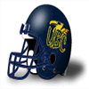British Columbia Thunderbirds fan favorite WR Mark Duper is becoming a local hero even as a college kid. You simply cannot walk two blocks in ND without seeing his jersey.
British Columbia Thunderbirds prestige bonus + 0.05Bowl Games Recruiting Update30 players committed this week.
5 star players committed this week: 0.
4 star players committed this week: 0.
3 star players committed this week: 29.
2 star players committed this week: 1.
1 star players committed this week: 0.
0 players ranked in the top 100 recruits committed this week.
The most highly touted prospect committing this week was Gaylord Tarver (a 3 star T from HIGHLANDS HS ranked at #542) who committed to East Carolina.
Independent was the conference that netted the most recruits this week with a total of 9.
North Dakota State Bison locked down the most prospects this week was as they got 5 recruits to sign.
The highest ranked uncommitted recruit is Tod Walker - T. He is ranked at #559
Total Recruits committed this season is 1496.Postseason: SS SS FILLER (ILL) has suffered a major injury!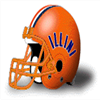The Illinois Fighting Illini' SS SS FILLER has suffered an injury: Out (12-16 weeks).Bowl Games Recruiting Update25 players committed this week.
5 star players committed this week: 0.
4 star players committed this week: 0.
3 star players committed this week: 25.
2 star players committed this week: 0.
1 star players committed this week: 0.
0 players ranked in the top 100 recruits committed this week.
The most highly touted prospect committing this week was Kristopher Hamilton (a 3 star DE from FRONTIER HIGH ranked at #454) who committed to Iowa.
Independent was the conference that netted the most recruits this week with a total of 12.
Pitt Panthers locked down the most prospects this week was as they got 3 recruits to sign.
The highest ranked uncommitted recruit is Gaylord Tarver - T. He is ranked at #542
Total Recruits committed this season is 1466.Bowl Games Recruiting Update34 players committed this week.
5 star players committed this week: 0.
4 star players committed this week: 1.
3 star players committed this week: 29.
2 star players committed this week: 4.
1 star players committed this week: 0.
0 players ranked in the top 100 recruits committed this week.
The most highly touted prospect committing this week was James Sisk (a 4 star DE from DEWEY HS ranked at #294) who committed to Mississippi State.
Big Eight Conference was the conference that netted the most recruits this week with a total of 9.
Mississippi State Bulldogs locked down the most prospects this week was as they got 5 recruits to sign.
The highest ranked uncommitted recruit is Kristopher Hamilton - DE. He is ranked at #454
Total Recruits committed this season is 1441.Bowl Games Recruiting Update36 players committed this week.
5 star players committed this week: 0.
4 star players committed this week: 0.
3 star players committed this week: 35.
2 star players committed this week: 1.
1 star players committed this week: 0.
0 players ranked in the top 100 recruits committed this week.
The most highly touted prospect committing this week was Robert Culp (a 3 star G from MELBOURNE SENIOR HS ranked at #508) who committed to Syracuse.
Independent was the conference that netted the most recruits this week with a total of 10.
Iowa State Cyclones locked down the most prospects this week was as they got 3 recruits to sign.
The highest ranked uncommitted recruit is James Sisk - DE. He is ranked at #294
Total Recruits committed this season is 1407.Bowl Games Recruiting Update64 players committed this week.
5 star players committed this week: 0.
4 star players committed this week: 4.
3 star players committed this week: 51.
2 star players committed this week: 9.
1 star players committed this week: 0.
0 players ranked in the top 100 recruits committed this week.
The most highly touted prospect committing this week was Shawn Meade (a 4 star DE from LANE TECHNICAL HS ranked at #200) who committed to Mississippi .
Big Eight Conference was the conference that netted the most recruits this week with a total of 12.
Duke Blue Devils locked down the most prospects this week was as they got 4 recruits to sign.
The highest ranked uncommitted recruit is James Sisk - DE. He is ranked at #294
Total Recruits committed this season is 1371.Bowl Games Recruiting Update62 players committed this week.
5 star players committed this week: 1.
4 star players committed this week: 4.
3 star players committed this week: 54.
2 star players committed this week: 3.
1 star players committed this week: 0.
1 players ranked in the top 100 recruits committed this week.
The most highly touted prospect committing this week was Jose Kelly (a 5 star DE from ARLINGTON HIGH ranked at #45) who committed to Oxford.
Independent was the conference that netted the most recruits this week with a total of 15.
Florida State Seminoles locked down the most prospects this week was as they got 3 recruits to sign.
The highest ranked uncommitted recruit is Shawn Meade - DE. He is ranked at #200
Total Recruits committed this season is 1307.Bowl Games Recruiting Update66 players committed this week.
5 star players committed this week: 0.
4 star players committed this week: 4.
3 star players committed this week: 58.
2 star players committed this week: 4.
1 star players committed this week: 0.
0 players ranked in the top 100 recruits committed this week.
The most highly touted prospect committing this week was Kent Pipkin (a 4 star T from SATELLITE SENIOR HS ranked at #191) who committed to Alabama.
Atlantic Coast Conference was the conference that netted the most recruits this week with a total of 14.
Georgia Tech Yellow Jackets locked down the most prospects this week was as they got 6 recruits to sign.
The highest ranked uncommitted recruit is Jose Kelly - DE. He is ranked at #45
Total Recruits committed this season is 1245.Week 14 Recruiting Update162 players committed this week.
5 star players committed this week: 0.
4 star players committed this week: 5.
3 star players committed this week: 149.
2 star players committed this week: 8.
1 star players committed this week: 0.
0 players ranked in the top 100 recruits committed this week.
The most highly touted prospect committing this week was David Terry (a 4 star G from NORTHWEST HIGH ranked at #233) who committed to Pitt.
Independent was the conference that netted the most recruits this week with a total of 40.
Penn State Nittany Lions locked down the most prospects this week was as they got 6 recruits to sign.
The highest ranked uncommitted recruit is Jose Kelly - DE. He is ranked at #45
Total Recruits committed this season is 1179.Indiana Hoosiers take the prize.Indiana is the league leader in turnover differential. With their offense only turning the ball over 6 times (3 interceptions and 3 fumbles), while their defense has delivered 27 takeaways (10 interceptions and 17 fumbles recovered).
This gives them a turnover differential of +21.
Top 10 turnover differentials:
Indiana Hoosiers: 21
Arizona Wildcats: 21
Kansas Jayhawks: 20
Ball State Cardinals: 20
Alabama Crimson Tide: 20
Western Mustangs: 18
East Carolina Pirates: 17
Georgia Tech Yellow Jackets: 14
Oklahoma Sooners: 13
Oregon Ducks: 13
At the bottom of the league, we find Baylor Bears, who clock in with an atrocious differential of -16.
Indiana Hoosiers prestige bonus + 0.05Prestige UpdatesPrestige Changes for week 14
Gains:
Iowa State Cyclones played with authority against the Oklahoma State Cowboys : Prestige bonus + 0.05
Baylor Bears blew out the South Carolina Gamecocks : Prestige bonus + 0.05
Losses:
Oklahoma State Cowboys was walked all over by the Iowa State Cyclones : Prestige loss - 0.1
Army Black Knights got trampled by the Penn State Nittany Lions : Prestige loss - 0.05
Hawaii Rainbow Warriors were crushed by the Louisville Cardinals : Prestige loss - 0.05
South Carolina Gamecocks were crushed by the Baylor Bears : Prestige loss - 0.1Week 14: DE Alfred Williams (COL) wins Defensive Player of the WeekDE Alfred Williams of the Colorado Buffaloes has earned the Defensive Player of the Week award. Williams finished with 4 Tck, 2 Sck.
Colorado Buffaloes prestige bonus + 0.05Week 14: RB Joseph Addai (LSU) wins Offensive Player of the Week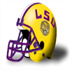Week 14's Offensive Player of the Week is Running Back Joseph Addai. His 23 att, 252 yds, 3 TD performance stood out in the 55 to 10 victory for the LSU Tigers.
The gridiron star is racking up the rushing yards and now has 1798 Yards and 19 Touchdowns for the season.
LSU Tigers prestige bonus + 0.05Clemson Tigers resigns Jonathan Hand as HeadCoach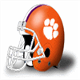The Tigers have announced that they have given Jonathan Hand a new contract. Hand will continue to serve as HeadCoach for 5 years earning 6.8 million per year.Week 14 : Conference Players of the WeekAtlantic Coast Conference Defensive player of the week: Strauthers, T. - DE, WFST.
Atlantic Coast Conference Offensive player of the week: Morse, S. - RB, VA.
Big Eight Conference Defensive player of the week: Williams, A. - DE, COL.
Big Eight Conference Offensive player of the week: Owens, T. - WR, IAST.
Big Ten Conference Defensive player of the week: Adeyanju, V. - DE, IND.
Big Ten Conference Offensive player of the week: Warfield, P. - WR, OHST.
Independent Defensive player of the week: FILLER, C. - CB, UWS.
Independent Offensive player of the week: Lambeau, C. - RB, NTDM.
PrimeTime International Conference Defensive player of the week: Jurkovic, J. - DT, US.
PrimeTime International Conference Offensive player of the week: Young, S. - QB, KCL.
Pacific 8 Conference Defensive player of the week: FILLER, C. - CB, ARIZ.
Pacific 8 Conference Offensive player of the week: Riggs, G. - RB, AZST.
Southeastern Conference Defensive player of the week: Britt, J. - FS, LSU.
Southeastern Conference Offensive player of the week: Addai, J. - RB, LSU.
Southwest Conference Defensive player of the week: Bolden, J. - CB, TT.
Southwest Conference Offensive player of the week: Anderson, A. - RB, BAY.
Game Recaps for Week 14Blue Devils - 37, Tar Heels - 23
Cavaliers - 47, Terrapins - 23
Demon Deacons - 38, Wolfpack - 16
Tigers - 16, Jayhawks - 3
Cyclones - 43, Wildcats - 7
Cornhuskers - 30, Buffaloes - 12
Cowboys - 41, Sooners - 17
Buckeyes - 44, Wolverines - 10
Hawkeyes - 18, Spartans - 15
Wildcats - 34, Fighting Illini - 3
Hoosiers - 16, Boilermakers - 0
Badgers - 38, Golden Gophers - 0
Fighting Irish - 66, Eagles - 0
Hurricanes - 27, Seminoles - 16
Tigers - 38, Yellow Jackets - 6
Black Knights - 30, Midshipmen - 3
Pirates - 26, Gamecocks - 3
Scarlet Knights - 34, Orange - 7
Hokies - 35, Nittany Lions - 32
Panthers - 13, Mountaineers - 10
Blues - 20, Lancers - 17
Regents - 51, Spartans - 7
Thunderbirds - 30, Carabins - 0
Huskies - 31, Mustangs - 7
Ducks - 51, Beavers - 7
Golden Bears - 33, Cardinal - 7
Bruins - 20, Trojans - 13
Huskies - 27, Cougars - 6
Crimson Tide - 35, Tigers - 24
Bulldogs - 31, Gators - 13
Tigers - 55, Wildcats - 10
Bulldogs - 31, Rebels - 12
Volunteers - 27, Commodores - 24
Bison - 24, Rainbow Warriors - 10
Razorbacks - 27, Mustangs - 7
Longhorns - 17, Aggies - 9
Bears - 45, Red Raiders - 10
Sun Devils - 17, Wildcats - 13
Cardinals - 42, Bearcats - 14
Cardinals - 45, Golden Flashes - 3
Cheesecurders - 15, Tusslin Scotsmen - 3Week 14 Recruiting Update319 players committed this week.
5 star players committed this week: 27.
4 star players committed this week: 85.
3 star players committed this week: 181.
2 star players committed this week: 26.
1 star players committed this week: 0.
54 players ranked in the top 100 recruits committed this week.
The most highly touted prospect committing this week was Sean Parks (a 5 star SS from MARYVALE HS ranked at #2) who committed to Texas.
Independent was the conference that netted the most recruits this week with a total of 76.
St Patty Patterson Tusslin Scotsmen locked down the most prospects this week was as they got 12 recruits to sign.
The highest ranked uncommitted recruit is Jose Kelly - DE. He is ranked at #45
Total Recruits committed this season is 1017.Steven Rodriguez - T commits to Notre Dame.Steven Rodriguez has committed to the Fighting Irish.
Rodriguez is widely considered to be one of the top ten prospects in this years recruiting class, and a lot of eyes have been on the T from PARKER HIGH.
Rodriguez was also pursued by Wisconsin Badgers, Michigan Wolverines, Oklahoma Sooners, Penn State Nittany Lions, Iowa State Cyclones, Louisville Cardinals, East Carolina Pirates, Iowa Hawkeyes, Oxford Lancers, Purdue Boilermakers, Colorado Buffaloes, Texas Tech Red Raiders, Oklahoma State Cowboys, and Lander Bearcats.Kenneth Melendez - DE commits to Nebraska.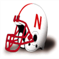Kenneth Melendez has committed to the Cornhuskers.
Melendez is widely considered to be one of the top ten prospects in this years recruiting class, and a lot of eyes have been on the DE from DE SOTO HIGH SCHOOL.
Melendez was also pursued by Michigan Wolverines, USC Trojans, Oklahoma Sooners, Miami (FL) Hurricanes, Florida Gators, Lander Bearcats, and Pitt Panthers.Christopher Cooper - G commits to Notre Dame.Christopher Cooper has committed to the Fighting Irish.
Cooper is widely considered to be one of the top ten prospects in this years recruiting class, and a lot of eyes have been on the G from INSTRUCTIONAL CENTER SYSTEM WIDE.
Cooper was also pursued by Georgia Bulldogs, Michigan Wolverines, Oklahoma Sooners, Texas Longhorns, Miami (FL) Hurricanes, Florida Gators, Kent State Golden Flashes, St Patty Patterson Tusslin Scotsmen, Wisconsin State Cheesecurders, Saskatchewan Huskies, Kansas Jayhawks, East Carolina Pirates, Ball State Cardinals, Pitt Panthers, Clemson Tigers, Washington Huskies, Washington State Cougars, Iowa Hawkeyes, Florida State Seminoles, Alabama Crimson Tide, Baylor Bears, Mississippi State Bulldogs, Illinois Fighting Illini, Louisville Cardinals, and Cambridge Blues.Preston Durr - DT commits to Miami (FL).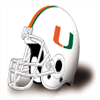Preston Durr has committed to the Hurricanes.
Durr is widely considered to be one of the top ten prospects in this years recruiting class, and a lot of eyes have been on the DT from JEFFERSON DAVIS HS.
Durr was also pursued by Notre Dame Fighting Irish, USC Trojans, Auburn Tigers, Texas Longhorns, Clemson Tigers, Kings College London Regents, Purdue Boilermakers, Hawaii Rainbow Warriors, Tennessee Volunteers, Arizona Wildcats, Georgia Bulldogs, Wisconsin Badgers, West London Spartans, Nebraska Cornhuskers, Army Black Knights, Oklahoma State Cowboys, Arkansas Razorbacks, North Carolina State Wolfpack, Boston College Eagles, Oxford Lancers, Illinois Fighting Illini, Iowa State Cyclones, Florida State Seminoles, Syracuse Orange, Duke Blue Devils, Maryland Terrapins, Pitt Panthers, SMU Mustangs, Western Mustangs, Iowa Hawkeyes, Washington State Cougars, and Oregon Ducks.Shelby Neal - LB commits to Ohio State.Shelby Neal has committed to the Buckeyes.
Neal is widely considered to be one of the top ten prospects in this years recruiting class, and a lot of eyes have been on the LB from PATRICK HENRY HIGH.
Neal was also pursued by Missouri Tigers, Virginia Tech Hokies, Michigan Wolverines, Nebraska Cornhuskers, Oklahoma Sooners, Auburn Tigers, Miami (FL) Hurricanes, Florida Gators, Hawaii Rainbow Warriors, Duke Blue Devils, North Dakota State Bison, Penn State Nittany Lions, Kentucky Wildcats, Michigan State Spartans, Washington State Cougars, Montreal Carabins, Arizona State Sun Devils, Vanderbilt Commodores, Pitt Panthers, West Virginia Mountaineers, Oxford Lancers, Illinois Fighting Illini, North Carolina State Wolfpack, Louisville Cardinals, Cambridge Blues, East Carolina Pirates, Lander Bearcats, Purdue Boilermakers, Arizona Wildcats, Washington Huskies, Oregon Ducks, Saskatchewan Huskies, Tennessee Volunteers, Arkansas Razorbacks, Baylor Bears, Texas Tech Red Raiders, Navy Midshipmen, Iowa State Cyclones, Kansas State Wildcats, UCLA Bruins, Kent State Golden Flashes, Northwestern Wildcats, Kansas Jayhawks, and Stanford Cardinal.Sean Parks - SS commits to Texas.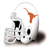Sean Parks has committed to the Longhorns.
Parks is widely considered to be one of the top ten prospects in this years recruiting class, and a lot of eyes have been on the SS from MARYVALE HS.
Parks was also pursued by Notre Dame Fighting Irish, USC Trojans, Oklahoma Sooners, Ohio State Buckeyes, Auburn Tigers, Colorado Buffaloes, Mississippi State Bulldogs, Oregon State Beavers, Texas Tech Red Raiders, Ball State Cardinals, Kings College London Regents, Wisconsin Badgers, Washington State Cougars, Western Mustangs, Hawaii Rainbow Warriors, Missouri Tigers, Maryland Terrapins, Kansas Jayhawks, Vanderbilt Commodores, West Virginia Mountaineers, Pitt Panthers, West London Spartans, Mississippi Rebels, Georgia Bulldogs, Michigan Wolverines, Oklahoma State Cowboys, Rutgers Scarlet Knights, and Kansas State Wildcats.William Thorn - DE commits to Michigan.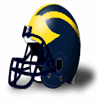William Thorn has committed to the Wolverines.
Thorn is widely considered to be one of the top ten prospects in this years recruiting class, and a lot of eyes have been on the DE from DODGEVILLE HIGH.
Thorn was also pursued by Nebraska Cornhuskers, USC Trojans, Oklahoma Sooners, Auburn Tigers, Miami (FL) Hurricanes, Ohio State Buckeyes, Tennessee Volunteers, Kent State Golden Flashes, Arkansas Razorbacks, Oregon Ducks, Texas AM Aggies, Lander Bearcats, Oxford Lancers, Clemson Tigers, Montreal Carabins, and Texas Tech Red Raiders.Prestige UpdatesPrestige Changes for week 14
Gains:
Iowa State Cyclones lit up the scoreboard against the Oklahoma State Cowboys : Prestige bonus + 0.05
Baylor Bears lit up the scoreboard against the South Carolina Gamecocks : Prestige bonus + 0.05
Losses:
Oklahoma State Cowboys was walked all over by the Iowa State Cyclones : Prestige loss - 0.1
Army Black Knights were blown out by the Penn State Nittany Lions : Prestige loss - 0.05
Hawaii Rainbow Warriors was walked all over by the Louisville Cardinals : Prestige loss - 0.05
South Carolina Gamecocks was walked all over by the Baylor Bears : Prestige loss - 0.1League News: Texas Longhorns: A no Pass Zone.Longhorns pass defense this year has been exceptional this season, giving up only 584 in 11 games. Said one member of the defensive backfield, ‘We don’t back down from anybody. That’s our key to success. You put a 6’5 receiver out there, we play like we’re 6’6.’.Week 13: QB Randall Cunningham (NDSU) wins Offensive Player of the Week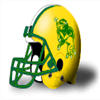The North Dakota State Bison' Randall Cunningham threw 4 touchdowns, completing 15 of 25 passes for 269 yards in the Bison victory over the St Patty Patterson Tusslin Scotsmen.
After being signed in 0, season number 4 for Cunningham, has seen some impressive numbers including 11 touchdown passes this season.
North Dakota State Bison prestige bonus + 0.05Is Reeves worth keeping?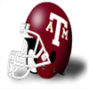A person in the Aggies' building claims Ken Reeves - T is being monitored closely by the coaching staff. They want to make sure he is kept in check, so he does not become more of a distraction to the team than he already is.
Texas AM Aggies prestige penalty - 0.05Week 13: FS Je'Rod Cherry (CAL) wins Defensive Player of the Week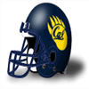FS Je'Rod Cherry of the California Golden Bears has earned the Defensive Player of the Week award. Cherry finished with 8 Tck, 2 Int, 1 Def TD, 1 FR.
California Golden Bears prestige bonus + 0.05Week 13 : Conference Players of the WeekAtlantic Coast Conference Defensive player of the week: Grant, D. - DT, DUK.
Atlantic Coast Conference Offensive player of the week: Horn, J. - WR, WFST.
Big Eight Conference Defensive player of the week: Fencik, G. - FS, OK.
Big Eight Conference Offensive player of the week: Owens, T. - WR, IAST.
Big Ten Conference Defensive player of the week: Hanks, M. - CB, IOWA.
Big Ten Conference Offensive player of the week: Greene, S. - RB, MIST.
Independent Defensive player of the week: Abraham, D. - FS, NDSU.
Independent Offensive player of the week: Cunningham, R. - QB, NDSU.
PrimeTime International Conference Defensive player of the week: FILLER, D. - DE, UdeM.
PrimeTime International Conference Offensive player of the week: Duper, M. - WR, UBC .
Pacific 8 Conference Defensive player of the week: Cherry, J. - FS, CAL.
Pacific 8 Conference Offensive player of the week: Conwell, E. - TE, WASH.
Southeastern Conference Defensive player of the week: Pittman, K. - DE, VAND.
Southeastern Conference Offensive player of the week: Franklin, B. - WR, AUB.
Southwest Conference Defensive player of the week: Dixon, H. - CB, ECU.
Southwest Conference Offensive player of the week: Rice, A. - RB, BAY.
Game Recaps for Week 13Demon Deacons - 47, Tigers - 24
Tar Heels - 38, Yellow Jackets - 3
Blue Devils - 34, Wolfpack - 16
Sooners - 27, Buffaloes - 17
Cornhuskers - 21, Wildcats - 9
Cyclones - 56, Cowboys - 17
Fighting Illini - 19, Golden Gophers - 3
Spartans - 19, Hoosiers - 9
Hawkeyes - 33, Badgers - 26
Nittany Lions - 50, Black Knights - 0
Hokies - 35, Panthers - 23
Mountaineers - 34, Scarlet Knights - 10
Cardinals - 43, Rainbow Warriors - 0
Lancers - 37, Huskies - 16
Thunderbirds - 30, Blues - 27
Carabins - 13, Mustangs - 3
Huskies - 45, Golden Bears - 17
Beavers - 28, Cougars - 6
Tigers - 56, Wildcats - 31
Volunteers - 38, Tigers - 21
Commodores - 32, Rebels - 6
Bears - 61, Gamecocks - 7
Longhorns - 9, Red Raiders - 7
Aggies - 34, Pirates - 10
Ducks - 38, Sun Devils - 21
Bearcats - 34, Cardinals - 24
Bison - 120, Tusslin Scotsmen - 0Week 13: G Daryn Colledge (UdeM) has suffered a major injury!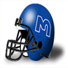The Montreal Carabins' G Daryn Colledge has suffered an injury: Out (12-16 weeks).Week 13 Recruiting Update116 players committed this week.
5 star players committed this week: 4.
4 star players committed this week: 27.
3 star players committed this week: 80.
2 star players committed this week: 5.
1 star players committed this week: 0.
10 players ranked in the top 100 recruits committed this week.
The most highly touted prospect committing this week was Gary Cassidy (a 5 star LB from GREENVILLE HS ranked at #1) who committed to Auburn.
Independent was the conference that netted the most recruits this week with a total of 22.
Oklahoma State Cowboys locked down the most prospects this week was as they got 5 recruits to sign.
The highest ranked uncommitted recruit is Sean Parks - SS. He is ranked at #2
Total Recruits committed this season is 698.Dae Anderson - T commits to Oklahoma.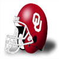Dae Anderson has committed to the Sooners.
Anderson is widely considered to be one of the top ten prospects in this years recruiting class, and a lot of eyes have been on the T from JONES COUNTY HS.
Anderson was also pursued by Michigan Wolverines, Georgia Bulldogs, Notre Dame Fighting Irish, Penn State Nittany Lions, Iowa Hawkeyes, Wake Forest Demon Deacons, Iowa State Cyclones, Oklahoma State Cowboys, Lander Bearcats, and Purdue Boilermakers.Gary Cassidy - LB commits to Auburn.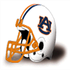Gary Cassidy has committed to the Tigers.
Cassidy is widely considered to be one of the top ten prospects in this years recruiting class, and a lot of eyes have been on the LB from GREENVILLE HS.
Cassidy was also pursued by Michigan Wolverines, Nebraska Cornhuskers, USC Trojans, Oklahoma Sooners, Ohio State Buckeyes, Miami (FL) Hurricanes, UCLA Bruins, Florida Gators, North Dakota State Bison, Penn State Nittany Lions, Kentucky Wildcats, Washington State Cougars, Montreal Carabins, Georgia Tech Yellow Jackets, Pitt Panthers, Alabama Crimson Tide, Arkansas Razorbacks, Oxford Lancers, Illinois Fighting Illini, North Carolina State Wolfpack, Louisville Cardinals, Purdue Boilermakers, Washington Huskies, Lander Bearcats, Mississippi Rebels, Kansas State Wildcats, Hawaii Rainbow Warriors, Kent State Golden Flashes, Iowa State Cyclones, East Carolina Pirates, Cambridge Blues, Arizona Wildcats, Arizona State Sun Devils, Kansas Jayhawks, Texas Tech Red Raiders, Baylor Bears, and Stanford Cardinal.League News: Top receiver trio?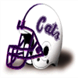The Wildcats trio of Jerry Rice - WR, Steve Tasker - WR and Stacey Bailey - WR are currently the leading trio of catchers in the league, with 2988 receiving yards between the three.Prestige UpdatesPrestige Changes for week 13
Gains:
Clemson Tigers put the hammer on North Carolina State Wolfpack : Prestige bonus + 0.05
Northwestern Wildcats vastly outscored the Indiana Hoosiers : Prestige bonus + 0.05
Cambridge Blues vastly outscored the Montreal Carabins : Prestige bonus + 0.05
North Dakota State Bison lit up the scoreboard against the Ball State Cardinals : Prestige bonus + 0.05
Losses:
North Carolina State Wolfpack were crushed by the Clemson Tigers : Prestige loss - 0.1
Indiana Hoosiers were blown out by the Northwestern Wildcats : Prestige loss - 0.1
Montreal Carabins got humiliated by the Cambridge Blues : Prestige loss - 0.1
Ball State Cardinals got trampled by the North Dakota State Bison : Prestige loss - 0.1East Carolina Pirates resigns Lester Buckingham as HeadCoach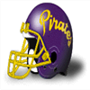The Pirates have announced that they have given Lester Buckingham a new contract. Buckingham will continue to serve as HeadCoach for 5 years earning 5.9 million per year.Is Reeves a distraction or not??An anonymous source in the Aggies' locker room claim players are getting tired of Ken Reeves - T. His antics is influencing the team, taking away focus from football.
Texas AM Aggies prestige penalty - 0.05Week 12: CB Marty Carter (NAVY) wins Defensive Player of the WeekCB Marty Carter of the Navy Midshipmen has earned the Defensive Player of the Week award. Carter finished with 4 Tck, 2 Int, 1 Def TD.
Navy Midshipmen prestige bonus + 0.05Week 12: QB Steve DeBerg (NWST) wins Offensive Player of the WeekThe league announced Northwestern Wildcats quarterback Steve DeBerg has been named Offensive Player of the Week.
The Wildcats defeated the Indiana Hoosiers, 85 to 6. DeBerg did his part, throwing 7 touchdowns, completing 19 of 24 passes for 459 yards. His outstanding performance now brings his season Touchdown to Interception Ratio to 44 to 8, and a passer rating of 171.3.
Northwestern Wildcats prestige bonus + 0.05Week 12 : Conference Players of the WeekAtlantic Coast Conference Defensive player of the week: Stuckey, J. - DE, CLEM.
Atlantic Coast Conference Offensive player of the week: Horn, J. - WR, WFST.
Big Eight Conference Defensive player of the week: Hunter, D. - FS, KANST.
Big Eight Conference Offensive player of the week: Owens, T. - WR, IAST.
Big Ten Conference Defensive player of the week: Cousineau, T. - LB, OHST.
Big Ten Conference Offensive player of the week: DeBerg, S. - QB, NWST.
Independent Defensive player of the week: Carter, M. - CB, NAVY.
Independent Offensive player of the week: Anderson, O. - RB, MIAFL.
PrimeTime International Conference Defensive player of the week: Merrill, C. - DE, CU.
PrimeTime International Conference Offensive player of the week: Jenkins, K. - RB, KCL.
Pacific 8 Conference Defensive player of the week: Clemons, D. - DE, CAL.
Pacific 8 Conference Offensive player of the week: Jones-Drew, M. - RB, UCLA.
Southeastern Conference Defensive player of the week: Williams, B. - DE, OLEMIS.
Southeastern Conference Offensive player of the week: Davis, W. - WR, BAMA.
Southwest Conference Defensive player of the week: Mickens, R. - SS, TEXAM.
Southwest Conference Offensive player of the week: Everett, M. - RB, TT.
Game Recaps for Week 12Blue Devils - 40, Yellow Jackets - 14
Tigers - 56, Wolfpack - 0
Demon Deacons - 41, Cavaliers - 23
Cyclones - 49, Tigers - 17
Wildcats - 31, Cowboys - 17
Sooners - 20, Cornhuskers - 15
Wildcats - 85, Hoosiers - 6
Hawkeyes - 20, Wolverines - 13
Fighting Illini - 17, Spartans - 6
Buckeyes - 13, Boilermakers - 7
Panthers - 14, Eagles - 0
Seminoles - 24, Rainbow Warriors - 17
Hurricanes - 75, Cheesecurders - 0
Fighting Irish - 41, Orange - 21
Midshipmen - 19, Scarlet Knights - 10
Mountaineers - 29, Black Knights - 3
Blues - 48, Carabins - 0
Lancers - 34, Mustangs - 2
Regents - 42, Huskies - 38
Wildcats - 29, Golden Bears - 23
Bruins - 24, Cardinal - 21
Trojans - 15, Cougars - 10
Sun Devils - 23, Huskies - 3
Bulldogs - 27, Tigers - 20
Tigers - 34, Gators - 13
Crimson Tide - 27, Bulldogs - 3
Wildcats - 21, Rebels - 20
Bison - 51, Cardinals - 13
Longhorns - 16, Pirates - 7
Aggies - 34, Razorbacks - 14
Red Raiders - 10, Gamecocks - 0
Golden Flashes - 57, Tusslin Scotsmen - 3Recruiting Watch With Darren Francis: Jose Williams - LBHey lovers of all things recruiting, prepare for the newest installment of Recruiting Watch With Darren Francis. In today's report, I am looking at Jose Williams, a blooming LB, who played high school football at DOMINION HIGH, VA. Williams is ranked as a 4 star recruit, and 97 overall. He weighs in at 225 pounds, is 6' 1" tall, at the age of 19. Alright! Moving on to the interesting parts.
He is driven by his love of the sport. This is a kid who really contributes to the team spirit and the social cohesiveness on the team. Just watch the way he tackles. No nonsense there. Hard hitting. Wraps up. And if possible, go for the ball. Will do so much for this defense.
The following teams are rumored to be chasing the promising LB: Purdue Boilermakers, Florida Gators, Clemson Tigers, Tennessee Volunteers, Kings College London Regents, UCLA Bruins, Michigan Wolverines, Georgia Tech Yellow Jackets, Duke Blue Devils, Virginia Tech Hokies, Michigan State Spartans, Penn State Nittany Lions, West Virginia Mountaineers, Washington Huskies, California Golden Bears, Kentucky Wildcats, Washington State Cougars, Pitt Panthers, British Columbia Thunderbirds, Arkansas Razorbacks, Army Black Knights, Illinois Fighting Illini, North Carolina Tar Heels, Alabama Crimson Tide, Ohio State Buckeyes, North Carolina State Wolfpack, Boston College Eagles, Mississippi Rebels, Virginia Cavaliers, Arizona Wildcats. Clearly, Jose Williams has plenty of options to mull over.
Williams has made clear, that no decision has been made yet. However, he did speak very highly of his experience with the recruiters from the Illinois Fighting Illini. Week 12 Recruiting Update119 players committed this week.
5 star players committed this week: 5.
4 star players committed this week: 26.
3 star players committed this week: 82.
2 star players committed this week: 6.
1 star players committed this week: 0.
12 players ranked in the top 100 recruits committed this week.
The most highly touted prospect committing this week was Joseph Heinz (a 5 star CB from SAN LORENZO HIGH ranked at #4) who committed to California.
Independent was the conference that netted the most recruits this week with a total of 27.
Nebraska Cornhuskers locked down the most prospects this week was as they got 5 recruits to sign.
The highest ranked uncommitted recruit is Gary Cassidy - LB. He is ranked at #1
Total Recruits committed this season is 582.Joseph Heinz - CB commits to California.Joseph Heinz has committed to the Golden Bears.
Heinz is widely considered to be one of the top ten prospects in this years recruiting class, and a lot of eyes have been on the CB from SAN LORENZO HIGH.
Heinz was also pursued by Boston College Eagles, Stanford Cardinal, Michigan Wolverines, USC Trojans, Oklahoma Sooners, Miami (FL) Hurricanes, North Dakota State Bison, Penn State Nittany Lions, Rutgers Scarlet Knights, Oxford Lancers, Louisville Cardinals, Kansas Jayhawks, Lander Bearcats, Ball State Cardinals, Washington Huskies, Colorado Buffaloes, West Virginia Mountaineers, Oregon State Beavers, Minnesota Golden Gophers, Indiana Hoosiers, Mississippi Rebels, Vanderbilt Commodores, Kent State Golden Flashes, Hawaii Rainbow Warriors, Arizona State Sun Devils, Oregon Ducks, North Carolina State Wolfpack, Florida State Seminoles, and Baylor Bears.Pacific 8 Conference News: Top receiver trio?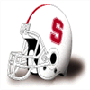The Cardinal trio of Tony Hill - WR, James Lofton - WR and Ed McCaffrey - WR are currently the leading trio of receivers in the league, with 22 receiving touchdowns between the three.Prestige UpdatesPrestige Changes for week 12
Gains:
North Carolina State Wolfpack put the hammer on North Carolina Tar Heels : Prestige bonus + 0.05
Northwestern Wildcats kept scoring points against the Minnesota Golden Gophers : Prestige bonus + 0.05
Rutgers Scarlet Knights put the hammer on Army Black Knights : Prestige bonus + 0.05
West Virginia Mountaineers put the hammer on Syracuse Orange : Prestige bonus + 0.05
Losses:
North Carolina Tar Heels was walked all over by the North Carolina State Wolfpack : Prestige loss - 0.1
Minnesota Golden Gophers were crushed by the Northwestern Wildcats : Prestige loss - 0.1
Army Black Knights got trampled by the Rutgers Scarlet Knights : Prestige loss - 0.1
Syracuse Orange were crushed by the West Virginia Mountaineers : Prestige loss - 0.1
Western Mustangs was walked all over by the British Columbia Thunderbirds : Prestige loss - 0.05
Kentucky Wildcats got trampled by the Alabama Crimson Tide : Prestige loss - 0.05LSU Tigers resigns Philip Fink as HeadCoachThe Tigers have announced that they have given Philip Fink a new contract. Fink will continue to serve as HeadCoach for 6 years earning 6.5 million per year.Stanford Cardinal resigns Justin Sizemore as HeadCoachThe Cardinal have announced that they have given Justin Sizemore a new contract. Sizemore will continue to serve as HeadCoach for 4 years earning 6.4 million per year.Is Reeves a distraction or not??An individual with connections in the Aggies' locker room says that players are getting tired of Ken Reeves - T. His antics is influencing the team, taking away focus from football.
Texas AM Aggies prestige penalty - 0.05Week 11: RB Herman Heard (BSU) wins Offensive Player of the WeekWeek 11's Offensive Player of the Week is Running Back Herman Heard. His 20 att, 336 yds, 7 TD performance stood out in the 116 to 3 victory for the Ball State Cardinals.
The gridiron star is racking up the rushing yards and now has 802 Yards and 11 Touchdowns for the season.
Ball State Cardinals prestige bonus + 0.05Week 11: FS Don Wilson (NCST) wins Defensive Player of the WeekFS Don Wilson of the North Carolina State Wolfpack has earned the Defensive Player of the Week award. Wilson finished with 7 Tck, 2 Int, 1 Def TD.
North Carolina State Wolfpack prestige bonus + 0.05Week 11 : Conference Players of the WeekAtlantic Coast Conference Defensive player of the week: Wilson, D. - FS, NCST.
Atlantic Coast Conference Offensive player of the week: Quick, M. - WR, NCST.
Big Eight Conference Defensive player of the week: Stensrud, M. - DT, IAST.
Big Eight Conference Offensive player of the week: Pegram, E. - RB, IAST.
Big Ten Conference Defensive player of the week: Ryan, J. - LB, PUR.
Big Ten Conference Offensive player of the week: Rice, J. - WR, NWST.
Independent Defensive player of the week: Minnifield, F. - CB, LOU.
Independent Offensive player of the week: Heard, H. - RB, BSU.
PrimeTime International Conference Defensive player of the week: FILLER, C. - CB, UBC .
PrimeTime International Conference Offensive player of the week: Ross, D. - TE, UBC .
Pacific 8 Conference Defensive player of the week: Rushing, T. - CB, STAN.
Pacific 8 Conference Offensive player of the week: Allen, M. - RB, USC.
Southeastern Conference Defensive player of the week: Castille, J. - CB, BAMA.
Southeastern Conference Offensive player of the week: Martin, E. - WR, LSU.
Southwest Conference Defensive player of the week: Clayborn, R. - CB, TX.
Southwest Conference Offensive player of the week: Jefferson, S. - WR, SMU.
Game Recaps for Week 11Terrapins - 31, Blue Devils - 26
Wolfpack - 45, Tar Heels - 6
Demon Deacons - 43, Yellow Jackets - 10
Wildcats - 31, Buffaloes - 20
Cyclones - 33, Sooners - 19
Cornhuskers - 41, Jayhawks - 0
Hoosiers - 37, Fighting Illini - 10
Wolverines - 13, Badgers - 10
Spartans - 22, Boilermakers - 21
Wildcats - 51, Golden Gophers - 7
Hawkeyes - 20, Buckeyes - 10
Scarlet Knights - 41, Black Knights - 3
Hokies - 41, Eagles - 10
Cardinals - 38, Seminoles - 7
Hurricanes - 48, Rainbow Warriors - 10
Fighting Irish - 20, Panthers - 7
Nittany Lions - 32, Midshipmen - 9
Mountaineers - 38, Orange - 0
Spartans - 31, Carabins - 9
Thunderbirds - 61, Mustangs - 7
Blues - 31, Huskies - 10
Ducks - 42, Wildcats - 0
Cougars - 20, Bruins - 16
Trojans - 38, Beavers - 17
Cardinal - 27, Huskies - 20
Volunteers - 31, Gators - 20
Tigers - 27, Bulldogs - 0
Crimson Tide - 51, Wildcats - 7
Tigers - 58, Rebels - 10
Commodores - 34, Bulldogs - 0
Longhorns - 61, Bears - 3
Bison - 104, Cheesecurders - 0
Aggies - 31, Gamecocks - 3
Mustangs - 21, Red Raiders - 6
Sun Devils - 31, Golden Bears - 20
Bearcats - 19, Golden Flashes - 17
Cardinals - 116, Tusslin Scotsmen - 3Week 11: T Dave Lutz (GT) has suffered a major injury!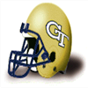The Georgia Tech Yellow Jackets' T Dave Lutz has suffered an injury: Out (12-16 weeks).Week 11: DE Elliott Fortune (GT) has suffered a major injury!The Georgia Tech Yellow Jackets' DE Elliott Fortune has suffered an injury: Out (12-16 weeks).Recruiting Watch With Darren Francis: Ben Vasquez - WRHello football diehards. I am glad to be here with another edition of Recruiting Watch With Darren Francis. In this edition, we look closer at Ben Vasquez, an interesting WR, from WILLIAM J. (PETE) KNIGHT HIGH, CA. Vasquez is ranked as a 4 star recruit, and 80 overall. Vasquez is 18 years old, weighs 175 pounds and is 5' 11" tall. Here is our analysis:
Known among his teammates as a hard worker. This is the kind of kid you want to promote the game. Well behaved, loves the game, and respectful. This is a kid who will shoulder any blame. When you watch him you rarely see him drop the ball. Great balance. Runs good routes, and that is really something coaches are looking for in kids. Well schooled in the game, and it shows on the field.
The following teams are rumored to be interested in Vasquez: Missouri Tigers, Iowa Hawkeyes, UCLA Bruins, Virginia Tech Hokies, Duke Blue Devils, Georgia Bulldogs, Georgia Tech Yellow Jackets, USC Trojans, West Virginia Mountaineers, California Golden Bears, Kentucky Wildcats, Oregon Ducks, Minnesota Golden Gophers, LSU Tigers, Washington State Cougars, Oregon State Beavers, Illinois Fighting Illini, North Carolina State Wolfpack, Boston College Eagles, Stanford Cardinal, Texas AM Aggies, Mississippi Rebels, Virginia Cavaliers, Syracuse Orange, South Carolina Gamecocks, Arizona Wildcats, St Patty Patterson Tusslin Scotsmen, Wisconsin State Cheesecurders, North Dakota State Bison, Mississippi State Bulldogs, Louisville Cardinals, Kansas State Wildcats, Lander Bearcats, Texas Tech Red Raiders, SMU Mustangs.
Vasquez has been open about not having any idea about what he might ultimately decide. Week 11 Recruiting Update62 players committed this week.
5 star players committed this week: 0.
4 star players committed this week: 9.
3 star players committed this week: 47.
2 star players committed this week: 6.
1 star players committed this week: 0.
2 players ranked in the top 100 recruits committed this week.
The most highly touted prospect committing this week was Shane Sledge (a 4 star QB from ESTANCIA HIGH ranked at #81) who committed to Nebraska.
Independent was the conference that netted the most recruits this week with a total of 19.
Minnesota Golden Gophers locked down the most prospects this week was as they got 3 recruits to sign.
The highest ranked uncommitted recruit is Gary Cassidy - LB. He is ranked at #1
Total Recruits committed this season is 463.League News: Texas Longhorns: A no Pass Zone.Longhorns pass defense this year has been terrific this season, giving up only 439 in 8 games. Good luck to anybody facing these animals..Prestige UpdatesPrestige Changes for week 11
Gains:
Northwestern Wildcats vastly outscored the Purdue Boilermakers : Prestige bonus + 0.05
East Carolina Pirates vastly outscored the SMU Mustangs : Prestige bonus + 0.05
Losses:
Maryland Terrapins was walked all over by the Clemson Tigers : Prestige loss - 0.05
Purdue Boilermakers got humiliated by the Northwestern Wildcats : Prestige loss - 0.1
SMU Mustangs were crushed by the East Carolina Pirates : Prestige loss - 0.1Montreal Carabins fire their defensive coordinator Clarkson go.Michael Clarkson will no longer serve as defensive coordinator for the Montreal Carabins, the team announced via their website. The role of defensive coordinator will be filled for the reast of the season by Raymond Mears. The team has been atrocious this season, so everyone was expecting a shake up on the staff.Meet media's new darling: Jim McMahon - QB.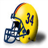The local media seems to have picked their newest fancy: Jim McMahon - QB. ME just loves to read about and watch ME. Fans are excited not just to see him play, but also to follow his media persona. Not surprisingly, the media are milking this for every drop they can get, riding the hype for clicks and mentions. With his sudden boost in media presence, Jim McMahon is surely going to figure in future marketing efforts by the Regents.
Kings College London Regents prestige bonus + 0.05Week 10: CB Danny Walters (ARK) wins Defensive Player of the WeekCB Walters's ball hawking ability was on display in the Razorbacks 20-7 game with the Texas Tech Red Raiders. He finished with 4 Tck, 1 Sck, 1 Int, 1 Def TD.
"Danny has the unique ability to make plays and generate turnovers." -Razorbacks Defensive Coordinator
Arkansas Razorbacks prestige bonus + 0.05Week 10: WR Byron Franklin (AUB) wins Offensive Player of the WeekFranklin's 4 rec, 222 yds, 3 TD effort led the way for the Auburn Tigers. This weeks 222 receiving yards bring his season total to 711 yards with 10 touchdowns on the season.
"To Byron, football is about winning and nothing else. He is one of the hardest workers on our team and deserves the attention he is getting from the media and fans." - Tigers Coach
Auburn Tigers prestige bonus + 0.05Week 10 : Conference Players of the WeekAtlantic Coast Conference Defensive player of the week: Dawkins, B. - SS, CLEM.
Atlantic Coast Conference Offensive player of the week: Clark, D. - WR, CLEM.
Big Eight Conference Defensive player of the week: FILLER, D. - DE, KAN.
Big Eight Conference Offensive player of the week: Fryar, I. - WR, NEB.
Big Ten Conference Defensive player of the week: Cole, C. - DT, IOWA.
Big Ten Conference Offensive player of the week: Rice, J. - WR, NWST.
Independent Defensive player of the week: FILLER, D. - DE, UH.
Independent Offensive player of the week: Bell, G. - RB, NTDM.
PrimeTime International Conference Defensive player of the week: FILLER, D. - DE, KCL.
PrimeTime International Conference Offensive player of the week: Jenkins, K. - RB, KCL.
Pacific 8 Conference Defensive player of the week: Jenkins, J. - DE, STAN.
Pacific 8 Conference Offensive player of the week: Elway, J. - QB, STAN.
Southeastern Conference Defensive player of the week: McNeal, D. - CB, BAMA.
Southeastern Conference Offensive player of the week: Franklin, B. - WR, AUB.
Southwest Conference Defensive player of the week: Walters, D. - CB, ARK.
Southwest Conference Offensive player of the week: Gray, O. - RB, ARK.
Game Recaps for Week 10Tigers - 58, Terrapins - 14
Blue Devils - 48, Cavaliers - 35
Demon Deacons - 48, Tar Heels - 27
Cyclones - 23, Buffaloes - 10
Cowboys - 16, Jayhawks - 0
Cornhuskers - 21, Tigers - 3
Hawkeyes - 30, Hoosiers - 9
Spartans - 35, Wolverines - 28
Wildcats - 59, Boilermakers - 14
Buckeyes - 34, Badgers - 0
Mountaineers - 27, Eagles - 14
Seminoles - 16, Bison - 13
Panthers - 34, Scarlet Knights - 7
Orange - 38, Midshipmen - 14
Fighting Irish - 59, Hokies - 0
Regents - 38, Carabins - 13
Spartans - 26, Lancers - 23
Thunderbirds - 27, Huskies - 6
Cougars - 24, Golden Bears - 9
Bruins - 30, Beavers - 3
Cardinal - 43, Wildcats - 10
Huskies - 14, Trojans - 7
Crimson Tide - 41, Bulldogs - 7
Tigers - 58, Tigers - 28
Gators - 13, Wildcats - 12
Bulldogs - 19, Volunteers - 17
Razorbacks - 20, Red Raiders - 7
Pirates - 47, Mustangs - 3
Bears - 30, Aggies - 17
Hurricanes - 41, Cardinals - 24
Rainbow Warriors - 45, Tusslin Scotsmen - 0
Golden Flashes - 44, Cheesecurders - 0Recruiting Watch With Darren Francis: Jesse Hall - THowdy followers of recruiting news, are you ready for another round of Recruiting Watch With Darren Francis? For this edition, we will be looking at Jesse Hall. Hall is T, from TESORO HIGH, CA. Hall is ranked as a 4 star player, and 79 overall. Hall is 6' 9" tall, weighs 307 pounds and is 18 years old. Without further ado, let us look at his report card.
Known among his teammates as a hard worker. Sportsmanship, love of the sport and respect, is what you get with him. The guy has gets along with everyone. In highschool, he routinely threw defenders off their feet when blocking them. Watch the tape, this kind is strong. He comes of the line with power and leverage on run plays. This is something that scouts notice. Knowledgeable of the game.
Teams are competing for the signature of the promising T. It is going to be a hard decision to make, when the list of teams includes Jesse Hall.
Hall has been open about not having any idea about what he might ultimately decide. Week 10 Recruiting Update42 players committed this week.
5 star players committed this week: 0.
4 star players committed this week: 15.
3 star players committed this week: 26.
2 star players committed this week: 1.
1 star players committed this week: 0.
3 players ranked in the top 100 recruits committed this week.
The most highly touted prospect committing this week was Milford Mobley (a 4 star G from ANNISTON HS ranked at #49) who committed to Georgia Tech.
Pacific 8 Conference was the conference that netted the most recruits this week with a total of 12.
USC Trojans locked down the most prospects this week was as they got 5 recruits to sign.
The highest ranked uncommitted recruit is Gary Cassidy - LB. He is ranked at #1
Total Recruits committed this season is 401.Kansas Jayhawks take the prize.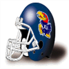Kansas is the league leader in turnover differential. With their offense only turning the ball over 4 times (2 interceptions and 2 fumbles), while their defense has delivered 21 takeaways (9 interceptions and 12 fumbles recovered).
This gives them a turnover differential of +17.
Top 10 turnover differentials:
Kansas Jayhawks: 17
Indiana Hoosiers: 15
Ball State Cardinals: 14
Arizona Wildcats: 14
Arizona State Sun Devils: 13
Western Mustangs: 12
Oklahoma State Cowboys: 11
East Carolina Pirates: 11
Georgia Tech Yellow Jackets: 10
SMU Mustangs: 10
At the bottom of the league, we find Baylor Bears, who clock in with an atrocious differential of -12.
Kansas Jayhawks prestige bonus + 0.05Prestige UpdatesPrestige Changes for week 10
Gains:
Missouri Tigers kept scoring points against the Oklahoma Sooners : Prestige bonus + 0.05
Purdue Boilermakers put the hammer on Minnesota Golden Gophers : Prestige bonus + 0.05
Virginia Cavaliers lit up the scoreboard against the Georgia Tech Yellow Jackets : Prestige bonus + 0.05
Arizona State Sun Devils lit up the scoreboard against the Oregon State Beavers : Prestige bonus + 0.05
Losses:
Oklahoma Sooners were no match for the Missouri Tigers : Prestige loss - 0.1
Minnesota Golden Gophers were no match for the Purdue Boilermakers : Prestige loss - 0.1
Georgia Tech Yellow Jackets were no match for the Virginia Cavaliers : Prestige loss - 0.1
Oxford Lancers got trampled by the British Columbia Thunderbirds : Prestige loss - 0.05
Oregon State Beavers were no match for the Arizona State Sun Devils : Prestige loss - 0.1Wake Forest Demon Deacons resigns Robert Kuhn as DefensiveCoordinatorThe Demon Deacons have announced that they have given Robert Kuhn a new contract. Kuhn will continue to serve as DefensiveCoordinator for 4 years earning 2.9 million per year.Stephenson: Local hero.Alabama Crimson Tide is proud of the community work of Dwight Stephenson. The 26 year old C from Alabama Crimson Tide has been heavily involved in various outreach programs since he arrived in Crimson Tide.
Alabama Crimson Tide prestige bonus + 0.05Week 9: RB Stump Mitchell (LAN) wins Offensive Player of the WeekThe honor comes after Mitchell's 20 att, 306 yds, 7 TD, 1 rec, 47 yds, 1 TD performance against the Wisconsin State Cheesecurders. Mitchell was signed 4 years ago.
Mitchell now has 771 Rushing Yards and 9 Touchdowns for the season.
Lander Bearcats prestige bonus + 0.05Week 9: CB Bruce McNorton (BSU) wins Defensive Player of the WeekCB Bruce McNorton of the Ball State Cardinals has earned the Defensive Player of the Week award. McNorton finished with 6 Tck, 2 Int, 1 Def TD.
Ball State Cardinals prestige bonus + 0.05Week 9 : Conference Players of the WeekAtlantic Coast Conference Defensive player of the week: White, R. - DT, MD.
Atlantic Coast Conference Offensive player of the week: Largent, S. - WR, NC.
Big Eight Conference Defensive player of the week: Colon, H. - SS, MIZZOU.
Big Eight Conference Offensive player of the week: Owens, T. - WR, IAST.
Big Ten Conference Defensive player of the week: Sutton, E. - FS, NWST.
Big Ten Conference Offensive player of the week: Rice, J. - WR, NWST.
Independent Defensive player of the week: McNorton, B. - CB, BSU.
Independent Offensive player of the week: Mitchell, S. - RB, LAN.
PrimeTime International Conference Defensive player of the week: Johnson, E. - DE, US.
PrimeTime International Conference Offensive player of the week: Marshall, B. - WR, CU.
Pacific 8 Conference Defensive player of the week: Chavous, B. - DE, WASHST.
Pacific 8 Conference Offensive player of the week: Elway, J. - QB, STAN.
Southeastern Conference Defensive player of the week: Perrin, B. - FS, BAMA.
Southeastern Conference Offensive player of the week: Franklin, B. - WR, AUB.
Southwest Conference Defensive player of the week: Johnson, E. - CB, SC.
Southwest Conference Offensive player of the week: Hector, J. - RB, TEXAM.
Game Recaps for Week 9Tigers - 44, Tar Heels - 34
Demon Deacons - 34, Blue Devils - 16
Wolfpack - 27, Terrapins - 19
Wildcats - 25, Jayhawks - 17
Cyclones - 33, Cornhuskers - 0
Tigers - 48, Sooners - 3
Buffaloes - 20, Cowboys - 17
Hoosiers - 28, Wolverines - 10
Wildcats - 30, Hawkeyes - 6
Spartans - 31, Buckeyes - 28
Boilermakers - 45, Golden Gophers - 7
Fighting Illini - 24, Badgers - 0
Cavaliers - 37, Yellow Jackets - 0
Nittany Lions - 21, Orange - 0
Panthers - 10, Midshipmen - 7
Scarlet Knights - 30, Eagles - 0
Razorbacks - 23, Gamecocks - 16
Rainbow Warriors - 16, Golden Flashes - 13
Hokies - 7, Black Knights - 3
Fighting Irish - 50, Mountaineers - 3
Thunderbirds - 62, Lancers - 13
Blues - 44, Regents - 28
Spartans - 19, Mustangs - 17
Huskies - 26, Carabins - 3
Trojans - 38, Golden Bears - 13
Cardinal - 45, Ducks - 27
Sun Devils - 48, Beavers - 10
Bruins - 20, Huskies - 9
Cougars - 29, Wildcats - 3
Tigers - 34, Gators - 24
Bulldogs - 38, Wildcats - 6
Tigers - 20, Bulldogs - 0
Volunteers - 38, Rebels - 14
Crimson Tide - 26, Commodores - 13
Hurricanes - 27, Bison - 19
Longhorns - 65, Mustangs - 0
Bears - 33, Pirates - 12
Aggies - 76, Red Raiders - 0
Cardinals - 27, Cardinals - 20
Bearcats - 93, Cheesecurders - 0
Seminoles - 91, Tusslin Scotsmen - 0Week 9: G G FILLER (LAN) has suffered a major injury!The Lander Bearcats' G G FILLER has suffered an injury: Out (8-12 weeks).Recruiting Watch With Darren Francis: Joesph Henderson - SSWelcome my companions in all things recruiting, prepare for the newest installment of Recruiting Watch With Darren Francis. For this installment, I look at Joesph Henderson, a young SS, out of PEARCE HS, TX. Henderson is a 4 star recruit, ranked 70. Henderson is 6' 3" tall, clocks in at 215 pounds and is 19 years old. OK, let us get down to business!
Tackles with good technique. He is sharp, and that makes him very coachable.
As one of the better SS coming out of high school this year, it is no surprise that Joesph Henderson has is being courted by several programs. Local news report that at least these teams have shown interest in bringing him into their program: West London Spartans, East Carolina Pirates, SMU Mustangs, Tennessee Volunteers, Clemson Tigers, Missouri Tigers, Notre Dame Fighting Irish, Georgia Tech Yellow Jackets, Wisconsin Badgers, Oklahoma Sooners, Washington Huskies, Washington State Cougars, Oregon State Beavers, Mississippi Rebels, Florida State Seminoles, Texas Longhorns.
Henderson has been largely mum on what he is going to decide. Most people would expect him to end up committing to the Washington State Cougars. Week 9 Recruiting Update71 players committed this week.
5 star players committed this week: 0.
4 star players committed this week: 19.
3 star players committed this week: 52.
2 star players committed this week: 0.
1 star players committed this week: 0.
3 players ranked in the top 100 recruits committed this week.
The most highly touted prospect committing this week was Donald Maki (a 4 star RB from WINNEBAGO HS ranked at #63) who committed to Auburn.
Independent was the conference that netted the most recruits this week with a total of 15.
Wake Forest Demon Deacons locked down the most prospects this week was as they got 4 recruits to sign.
The highest ranked uncommitted recruit is Gary Cassidy - LB. He is ranked at #1
Total Recruits committed this season is 359.Prestige UpdatesPrestige Changes for week 9
Gains:
Michigan State Spartans kept scoring points against the Minnesota Golden Gophers : Prestige bonus + 0.05
Northwestern Wildcats kept scoring points against the Wisconsin Badgers : Prestige bonus + 0.05
Maryland Terrapins kept scoring points against the Georgia Tech Yellow Jackets : Prestige bonus + 0.05
North Dakota State Bison lit up the scoreboard against the Lander Bearcats : Prestige bonus + 0.05
Losses:
Minnesota Golden Gophers got humiliated by the Michigan State Spartans : Prestige loss - 0.1
Wisconsin Badgers were crushed by the Northwestern Wildcats : Prestige loss - 0.1
Georgia Tech Yellow Jackets was walked all over by the Maryland Terrapins : Prestige loss - 0.1
Mississippi Rebels were no match for the LSU Tigers : Prestige loss - 0.05
Lander Bearcats got humiliated by the North Dakota State Bison : Prestige loss - 0.1
Kent State Golden Flashes were no match for the Louisville Cardinals : Prestige loss - 0.05League News: Defense dominates for Trojans.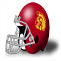The Trojans defensive line is riddling their enemies so far this season with a total of 25 sacks, 1 forced fumbles and 78 tackles in 7 games.Georgia Bulldogs resigns Bryan Boyce as OffensiveCoordinatorThe Bulldogs have announced that they have given Bryan Boyce a new contract. Boyce will continue to serve as OffensiveCoordinator for 2 years earning 5.1 million per year.Oregon Ducks resigns Victor Barbour as HeadCoach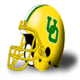The Ducks have announced that they have given Victor Barbour a new contract. Barbour will continue to serve as HeadCoach for 5 years earning 8.2 million per year.Week 8: DE Stephen Bowen (ORST) wins Defensive Player of the Week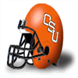DE Bowen absolutely dominated in the Beavers 14-3 game with the Arizona Wildcats. He finished with 3 Tck, 3 Sck, 1 FR.
Oregon State Beavers prestige bonus + 0.05Week 8: WR Jerry Rice (NWST) wins Offensive Player of the WeekRice's 5 rec, 153 yds, 3 TD effort led the way for the Northwestern Wildcats. This weeks 153 receiving yards bring his season total to 1031 yards with 17 touchdowns on the season.
"To Jerry, football is about winning and nothing else. He is one of the hardest workers on our team and deserves the attention he is getting from the media and fans." - Wildcats Coach
Northwestern Wildcats prestige bonus + 0.05Week 8 : Conference Players of the WeekAtlantic Coast Conference Defensive player of the week: Davis, W. - CB, DUK.
Atlantic Coast Conference Offensive player of the week: Lewis, J. - WR, MD.
Big Eight Conference Defensive player of the week: Donaldson, J. - CB, COL.
Big Eight Conference Offensive player of the week: Bieniemy, E. - RB, COL.
Big Ten Conference Defensive player of the week: FILLER, D. - DE, NWST.
Big Ten Conference Offensive player of the week: Rice, J. - WR, NWST.
Independent Defensive player of the week: Rice, R. - SS, NDSU.
Independent Offensive player of the week: Clayton, M. - WR, LOU.
PrimeTime International Conference Defensive player of the week: Eason, B. - LB, CU.
PrimeTime International Conference Offensive player of the week: Mann, M. - WR, OXF.
Pacific 8 Conference Defensive player of the week: Bowen, S. - DE, ORST.
Pacific 8 Conference Offensive player of the week: Jefferson, J. - WR, AZST.
Southeastern Conference Defensive player of the week: Burton, S. - DE, TENN.
Southeastern Conference Offensive player of the week: Morris, R. - RB, TENN.
Southwest Conference Defensive player of the week: Edwards, V. - DE, SMU.
Southwest Conference Offensive player of the week: Dickerson, E. - RB, SMU.
Game Recaps for Week 8Blue Devils - 41, Tigers - 26
Cavaliers - 13, Tar Heels - 10
Buffaloes - 27, Tigers - 19
Jayhawks - 26, Sooners - 0
Cowboys - 27, Cornhuskers - 7
Hawkeyes - 16, Fighting Illini - 0
Spartans - 62, Golden Gophers - 3
Wildcats - 56, Badgers - 0
Terrapins - 46, Yellow Jackets - 7
Hokies - 27, Midshipmen - 10
Mountaineers - 33, Nittany Lions - 15
Panthers - 34, Black Knights - 3
Mustangs - 19, Gamecocks - 9
Rainbow Warriors - 41, Cardinals - 27
Lancers - 24, Carabins - 0
Blues - 36, Spartans - 9
Regents - 27, Thunderbirds - 21
Ducks - 27, Huskies - 24
Sun Devils - 24, Cougars - 21
Tigers - 45, Rebels - 9
Volunteers - 69, Bulldogs - 0
Commodores - 45, Wildcats - 10
Bears - 23, Razorbacks - 9
Pirates - 13, Red Raiders - 3
Beavers - 14, Wildcats - 3
Bison - 69, Bearcats - 13
Cardinals - 45, Golden Flashes - 8Recruiting Watch With Darren Francis: Sam Stewart - RBHey my cohort of football fans, welcome indeed to this edition of Recruiting Watch With Darren Francis. For this edition, we will review Sam Stewart. Stewart is RB, from JOHN MARSHALL HIGH, VA. His ranking of 52 nationally, makes him a 4 star recruit. He weighs in at 206 pounds, is 6' 2" tall, at the age of 18. Here is what he brings to the table:
When you watch him, you are struck by how smoothly he moves. Runs right through defenders. Has good instincts on the field.
The following teams are rumored to be chasing the promising RB: Missouri Tigers, Kings College London Regents, Iowa Hawkeyes, Tennessee Volunteers, Clemson Tigers, Virginia Tech Hokies, Wisconsin Badgers, Georgia Tech Yellow Jackets, Notre Dame Fighting Irish, Duke Blue Devils, Arkansas Razorbacks, Michigan State Spartans, West Virginia Mountaineers, Kentucky Wildcats, British Columbia Thunderbirds, LSU Tigers, Pitt Panthers, North Carolina Tar Heels, Illinois Fighting Illini, North Carolina State Wolfpack, Stanford Cardinal, Boston College Eagles, Mississippi Rebels, Auburn Tigers, Virginia Cavaliers, Syracuse Orange, Florida State Seminoles, Miami (FL) Hurricanes, South Carolina Gamecocks. Clearly, Sam Stewart has plenty of options to mull over.
Sam Stewart refused to share his thinking or any upcoming decision regarding where he might commit. Week 8 Recruiting Update84 players committed this week.
5 star players committed this week: 1.
4 star players committed this week: 25.
3 star players committed this week: 58.
2 star players committed this week: 0.
1 star players committed this week: 0.
8 players ranked in the top 100 recruits committed this week.
The most highly touted prospect committing this week was Pablo Robbins (a 5 star SS from LA SERNA HIGH ranked at #23) who committed to USC.
Southeastern Conference was the conference that netted the most recruits this week with a total of 18.
Georgia Bulldogs locked down the most prospects this week was as they got 6 recruits to sign.
The highest ranked uncommitted recruit is Gary Cassidy - LB. He is ranked at #1
Total Recruits committed this season is 288.Prestige UpdatesPrestige Changes for week 8
Losses:
Western Mustangs were blown out by the Kings College London Regents : Prestige loss - 0.05
Arkansas Razorbacks got humiliated by the Texas Longhorns : Prestige loss - 0.05League News: Top receiver trio?The Demon Deacons trio of Chris Burkett - WR, Joe Horn - WR and Gary Clark - WR are currently the leading trio of receivers in the league, with 19 receiving touchdowns between the three.SMU Mustangs fire their defensive coordinator Norris go.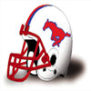Michael Norris will no longer serve as defensive coordinator for the SMU Mustangs, the team announced via their website. The role of defensive coordinator will be filled for the reast of the season by Paul Puente. The team has been atrocious this season, so everyone was expecting a shake up on the staff.LSU Tigers resigns Kim Morrow as DefensiveCoordinatorThe Tigers have announced that they have given Kim Morrow a new contract. Morrow will continue to serve as DefensiveCoordinator for 5 years earning 4.1 million per year.Washington State Cougars fire Alphonso Hoang!The Washington State Cougars have announced that Alphonso Hoang will no longer be their Head Coach. Instead they have promoted their Anthony Baskin. Everyone knew the season was lost at this point, but the Washington State Cougars apparently wanted to get a head start on changing the atmosphere.Iowa State Cyclones resigns William Rollins as HeadCoach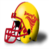The Cyclones have announced that they have given William Rollins a new contract. Rollins will continue to serve as HeadCoach for 4 years earning 4.4 million per year.North Carolina Tar Heels resigns Michael Lyons as HeadCoach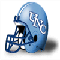The Tar Heels have announced that they have given Michael Lyons a new contract. Lyons will continue to serve as HeadCoach for 4 years earning 8.5 million per year.Week 7: CB Roynell Young (UWL) wins Defensive Player of the Week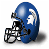CB Young's ball hawking ability was on display in the Huskies 27-16 game with the West London Spartans. He finished with 7 Tck, 3 Int, 1 FR.
"Roynell has the unique ability to make plays and generate turnovers." -Spartans Defensive Coordinator
West London Spartans prestige bonus + 0.05Week 7: QB John Elway (STAN) wins Offensive Player of the WeekThe league announced Stanford Cardinal quarterback John Elway has been named Offensive Player of the Week.
The Cardinal defeated the Oregon State Beavers, 53 to 27. Elway did his part, throwing 5 touchdowns, completing 18 of 24 passes for 461 yards. His outstanding performance now brings his season Touchdown to Interception Ratio to 21 to 2, and a passer rating of 215.1.
Stanford Cardinal prestige bonus + 0.05Week 7 : Conference Players of the WeekAtlantic Coast Conference Defensive player of the week: Ellsworth, P. - CB, VA.
Atlantic Coast Conference Offensive player of the week: Burkett, C. - WR, WFST.
Big Eight Conference Defensive player of the week: Liebenstein, T. - DE, IAST.
Big Eight Conference Offensive player of the week: Owens, T. - WR, IAST.
Big Ten Conference Defensive player of the week: Jones, H. - CB, ILL.
Big Ten Conference Offensive player of the week: Rice, J. - WR, NWST.
Independent Defensive player of the week: Gregory, S. - SS, SYR.
Independent Offensive player of the week: Bentley, A. - RB, MIAFL.
PrimeTime International Conference Defensive player of the week: Young, R. - CB, UWL.
PrimeTime International Conference Offensive player of the week: Mickens, A. - RB, KCL.
Pacific 8 Conference Defensive player of the week: Cason, W. - CB, OR.
Pacific 8 Conference Offensive player of the week: Elway, J. - QB, STAN.
Southeastern Conference Defensive player of the week: Golston, K. - DE, GEO.
Southeastern Conference Offensive player of the week: Ortego, K. - WR, VAND.
Southwest Conference Defensive player of the week: Green, J. - DE, TEXAM.
Southwest Conference Offensive player of the week: Campbell, E. - RB, TX.
Game Recaps for Week 7Demon Deacons - 47, Terrapins - 27
Cavaliers - 31, Wolfpack - 9
Cyclones - 52, Jayhawks - 17
Tigers - 20, Wildcats - 13
Buckeyes - 32, Fighting Illini - 10
Wolverines - 44, Golden Gophers - 0
Wildcats - 35, Spartans - 25
Badgers - 38, Boilermakers - 17
Fighting Irish - 31, Black Knights - 3
Mountaineers - 29, Midshipmen - 3
Nittany Lions - 22, Eagles - 0
Hokies - 39, Orange - 7
Huskies - 27, Spartans - 16
Regents - 66, Mustangs - 13
Trojans - 28, Ducks - 26
Cardinal - 53, Beavers - 27
Crimson Tide - 31, Volunteers - 17
Bulldogs - 21, Wildcats - 7
Bulldogs - 38, Rebels - 0
Commodores - 48, Gators - 14
Aggies - 27, Mustangs - 3
Longhorns - 44, Razorbacks - 0
Huskies - 26, Wildcats - 7
Sun Devils - 32, Bruins - 13
Seminoles - 72, Bearcats - 10
Hurricanes - 72, Cardinals - 9
Bison - 30, Golden Flashes - 28
Cardinals - 79, Cheesecurders - 0Recruiting Watch With Darren Francis: John Palmer - DTHello my companions in all things recruiting. I here bring you another part of the Recruiting Watch With Darren Francis. In this edition, we will evaluate John Palmer, a young DT, out of AL specifically, SPRING GARDEN HS. Palmer is a 5 star recruit, and his overall ranking is 48. He is 6' 0" tall, weighs 291 pounds and is 18 years old. OK, let us get to it.
This is not the kind of player who gives up or abandons his friends when things get tough. It is no coincidence he has attracted a lot of attention. This kid will bench press offensive linemen on his way to the Quarterback. Quick enough to get to the Quarterback, and every defensive coordinator likes to apply pressure inside.
A hot prospect, and a star coming out of high school, John Palmer has plenty of suitors. His high school gave the following list of who had officially contacted them: Georgia Tech Yellow Jackets, Notre Dame Fighting Irish, USC Trojans, Auburn Tigers, Texas Longhorns, Miami (FL) Hurricanes.
Currently, no one has any clue as to where Palmer intends to go. Week 7 Recruiting Update54 players committed this week.
5 star players committed this week: 0.
4 star players committed this week: 15.
3 star players committed this week: 38.
2 star players committed this week: 1.
1 star players committed this week: 0.
5 players ranked in the top 100 recruits committed this week.
The most highly touted prospect committing this week was Aaron Marcum (a 4 star DT from GREATER JOHNSTOWN SHS ranked at #42) who committed to Pitt.
Atlantic Coast Conference was the conference that netted the most recruits this week with a total of 10.
North Carolina Tar Heels locked down the most prospects this week was as they got 4 recruits to sign.
The highest ranked uncommitted recruit is Gary Cassidy - LB. He is ranked at #1
Total Recruits committed this season is 204.Prestige UpdatesPrestige Changes for week 7
Gains:
Clemson Tigers blew out the Virginia Cavaliers : Prestige bonus + 0.05
Navy Midshipmen vastly outscored the Boston College Eagles : Prestige bonus + 0.05
UCLA Bruins kept scoring points against the California Golden Bears : Prestige bonus + 0.05
Baylor Bears put the hammer on SMU Mustangs : Prestige bonus + 0.05
Losses:
Virginia Cavaliers were crushed by the Clemson Tigers : Prestige loss - 0.1
Boston College Eagles were blown out by the Navy Midshipmen : Prestige loss - 0.1
Oxford Lancers were no match for the Kings College London Regents : Prestige loss - 0.05
California Golden Bears were crushed by the UCLA Bruins : Prestige loss - 0.1
Washington State Cougars was walked all over by the Oregon Ducks : Prestige loss - 0.05
SMU Mustangs were blown out by the Baylor Bears : Prestige loss - 0.1League News: Texas Longhorns: A no Pass Zone.Longhorns pass defense this year has been backbreaking this season, giving up only 288 in 6 games. Said one member of the defensive backfield, ‘We don’t back down from anybody. That’s our key to success. You put a 6’5 receiver out there, we play like we’re 6’6.’.Schlichter still having red flagsNews in OH is - again - that the Buckeyes' QB Art Schlichter is in the sights of the disciplinary committee. Art Schlichter - QB is making it difficult for himself and the Buckeyes. Schlichter could be a productive player, but he must be able to stay out of trouble or teams will tire off him sooner rather than later.
Ohio State Buckeyes prestige penalty - 0.05Week 6: CB CB FILLER (AUB) wins Defensive Player of the WeekCB FILLER's ball hawking ability was on display in the Tigers 55-52 game with the Georgia Bulldogs. He finished with 4 Tck, 2 Int, 1 Def TD.
"CB has the unique ability to make plays and generate turnovers." -Tigers Defensive Coordinator
Auburn Tigers prestige bonus + 0.05Week 6: RB Albert Bentley (MIAFL) wins Offensive Player of the WeekWeek 6's Offensive Player of the Week is Running Back Albert Bentley. His 21 att, 269 yds, 5 TD performance stood out in the 105 to 0 victory for the Miami (FL) Hurricanes.
The gridiron star is racking up the rushing yards and now has 567 Yards and 10 Touchdowns for the season.
Miami (FL) Hurricanes prestige bonus + 0.05Week 6 : Conference Players of the WeekAtlantic Coast Conference Defensive player of the week: Jones, M. - DE, NCST.
Atlantic Coast Conference Offensive player of the week: Dawson, L. - TE, NCST.
Big Eight Conference Defensive player of the week: Hill, K. - SS, OK.
Big Eight Conference Offensive player of the week: Sewell, S. - RB, OKST.
Big Ten Conference Defensive player of the week: FILLER, D. - DE, IOWA.
Big Ten Conference Offensive player of the week: Rice, J. - WR, NWST.
Independent Defensive player of the week: Tuggle, A. - FS, NAVY.
Independent Offensive player of the week: Bentley, A. - RB, MIAFL.
PrimeTime International Conference Defensive player of the week: Young, R. - CB, UWL.
PrimeTime International Conference Offensive player of the week: Duper, M. - WR, UBC .
Pacific 8 Conference Defensive player of the week: Busick, S. - DE, USC.
Pacific 8 Conference Offensive player of the week: Allen, M. - RB, USC.
Southeastern Conference Defensive player of the week: FILLER, C. - CB, AUB.
Southeastern Conference Offensive player of the week: Shockley, D. - QB, GEO.
Southwest Conference Defensive player of the week: Murphy, M. - DE, BAY.
Southwest Conference Offensive player of the week: Campbell, E. - RB, TX.
Game Recaps for Week 6Tar Heels - 13, Terrapins - 10
Tigers - 48, Cavaliers - 3
Jayhawks - 27, Buffaloes - 7
Cowboys - 24, Tigers - 11
Sooners - 10, Wildcats - 6
Boilermakers - 10, Fighting Illini - 7
Hawkeyes - 35, Golden Gophers - 6
Wildcats - 20, Wolverines - 14
Hoosiers - 24, Buckeyes - 21
Black Knights - 39, Orange - 7
Wolfpack - 27, Yellow Jackets - 13
Hurricanes - 105, Tusslin Scotsmen - 0
Midshipmen - 43, Eagles - 0
Fighting Irish - 45, Scarlet Knights - 0
Nittany Lions - 19, Panthers - 17
Longhorns - 32, Gamecocks - 7
Rainbow Warriors - 30, Bearcats - 6
Blues - 30, Mustangs - 6
Regents - 53, Lancers - 0
Thunderbirds - 31, Spartans - 17
Bruins - 52, Golden Bears - 9
Ducks - 47, Cougars - 6
Tigers - 55, Bulldogs - 52
Commodores - 24, Tigers - 10
Gators - 40, Bulldogs - 0
Crimson Tide - 34, Rebels - 6
Pirates - 27, Razorbacks - 17
Bears - 48, Mustangs - 0
Trojans - 63, Wildcats - 0
Sun Devils - 33, Cardinal - 21
Cardinals - 72, Cheesecurders - 0
Seminoles - 34, Golden Flashes - 17Week 6: DE DE FILLER (UWS) has suffered a major injury!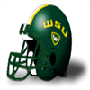The Wisconsin State Cheesecurders' DE DE FILLER has suffered an injury: Out (12-16 weeks).Week 6: C Quentin Neujahr (KANST) has suffered a major injury!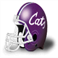The Kansas State Wildcats' C Quentin Neujahr has suffered an injury: Out (12-16 weeks).Recruiting Watch With Darren Francis: Jose Stone - CHi fellow football enthusiasts, hope you will like more in detail analysis in this installment of Recruiting Watch With Darren Francis. In this issue of Recruiting Watch, we will concern ourselves with Jose Stone, C, out of ARROYO VALLEY HIGH, CA. Stone is ranked as a 4 star recruit, and 40 overall. He is 6' 4" tall, weighs 295 pounds and is 18 years old. Here is what he brings to the table:
He helps everyone get in the right position, making the team run as a well oiled machine. This is not the kind of player who gives up or abandons his friends when things get tough. If you go to his tape, you will see he run blocks very well. Protects the QB well on pass plays. You can never have enough good pass blockers. Pretty fast learner.
A long list of teams have Jose Stone on their radar. While hard to verify, the list appears to include at least these programs: Iowa Hawkeyes, Missouri Tigers, Georgia Bulldogs, Wisconsin Badgers, Nebraska Cornhuskers, Oregon Ducks, British Columbia Thunderbirds, Arkansas Razorbacks, Oregon State Beavers, Illinois Fighting Illini, Indiana Hoosiers, Texas AM Aggies, Texas Longhorns.
Week 6 Recruiting Update70 players committed this week.
5 star players committed this week: 0.
4 star players committed this week: 12.
3 star players committed this week: 57.
2 star players committed this week: 1.
1 star players committed this week: 0.
1 players ranked in the top 100 recruits committed this week.
The most highly touted prospect committing this week was Warren Hines (a 4 star FS from NORTH BULLITT HS ranked at #72) who committed to Auburn.
Big Ten Conference was the conference that netted the most recruits this week with a total of 15.
Auburn Tigers locked down the most prospects this week was as they got 5 recruits to sign.
The highest ranked uncommitted recruit is Gary Cassidy - LB. He is ranked at #1
Total Recruits committed this season is 150.Big Ten Conference News: Illinois Fighting Illini defense dominates!The Fighting Illini' defense is terrorizing opponents this season. In 4 games they’ve surrendered only 698 total yards and 40 points. Kevin Hardy - LB is the boss of the defense with 26 take downs on the year. Could the Fighting Illini become a defining defense for the league?Prestige UpdatesPrestige Changes for week 6
Gains:
Cambridge Blues blew out the Boston College Eagles : Prestige bonus + 0.05
Baylor Bears kept scoring points against the Oklahoma Sooners : Prestige bonus + 0.05
Losses:
Boston College Eagles were blown out by the Cambridge Blues : Prestige loss - 0.1
Syracuse Orange was walked all over by the Stanford Cardinal : Prestige loss - 0.05
Mississippi Rebels were no match for the Florida State Seminoles : Prestige loss - 0.05
Oklahoma Sooners was walked all over by the Baylor Bears : Prestige loss - 0.1Week 5: RB DeDe Dorsey (IND) wins Offensive Player of the WeekWeek 5's Offensive Player of the Week is Running Back DeDe Dorsey. His 26 att, 371 yds, 7 TD performance stood out in the 92 to 0 victory for the Indiana Hoosiers.
The gridiron star is racking up the rushing yards and now has 868 Yards and 11 Touchdowns for the season.
Indiana Hoosiers prestige bonus + 0.05Week 5: DE Victor Adeyanju (IND) wins Defensive Player of the WeekDE Adeyanju absolutely dominated in the Hoosiers 92-0 game with the St Patty Patterson Tusslin Scotsmen. He finished with 8 Tck, 1 Sck.
Indiana Hoosiers prestige bonus + 0.05Week 5 : Conference Players of the WeekAtlantic Coast Conference Defensive player of the week: Jones, M. - DE, NCST.
Atlantic Coast Conference Offensive player of the week: Burkett, C. - WR, WFST.
Big Eight Conference Defensive player of the week: Williams, A. - DE, COL.
Big Eight Conference Offensive player of the week: Wilder, J. - RB, MIZZOU.
Big Ten Conference Defensive player of the week: Adeyanju, V. - DE, IND.
Big Ten Conference Offensive player of the week: Dorsey, D. - RB, IND.
Independent Defensive player of the week: Walker, F. - CB, WVA.
Independent Offensive player of the week: Scott, F. - WR, PENNST.
PrimeTime International Conference Defensive player of the week: Merrill, C. - DE, CU.
PrimeTime International Conference Offensive player of the week: Jenkins, K. - RB, KCL.
Pacific 8 Conference Defensive player of the week: Stover, J. - DE, OR.
Pacific 8 Conference Offensive player of the week: Elway, J. - QB, STAN.
Southeastern Conference Defensive player of the week: Daniel, E. - CB, LSU.
Southeastern Conference Offensive player of the week: Ortego, K. - WR, VAND.
Southwest Conference Defensive player of the week: Sims, K. - DE, TX.
Southwest Conference Offensive player of the week: Jackson, M. - WR, BAY.
Game Recaps for Week 5Wildcats - 47, Blue Devils - 21
Pirates - 27, Tar Heels - 17
Hokies - 23, Cavaliers - 15
Buffaloes - 10, Wildcats - 3
Hawkeyes - 22, Cyclones - 13
Golden Bears - 27, Jayhawks - 13
Sun Devils - 30, Wildcats - 3
Fighting Illini - 24, Tigers - 20
Spartans - 34, Cornhuskers - 7
Fighting Irish - 30, Wolverines - 3
Wolfpack - 27, Gamecocks - 3
Bruins - 30, Rainbow Warriors - 0
Mountaineers - 45, Terrapins - 21
Bearcats - 16, Lancers - 0
Blues - 59, Eagles - 9
Regents - 41, Black Knights - 13
Scarlet Knights - 33, Spartans - 0
Thunderbirds - 17, Cougars - 3
Huskies - 27, Huskies - 0
Ducks - 30, Mustangs - 14
Beavers - 41, Carabins - 7
Cardinal - 71, Orange - 13
Crimson Tide - 23, Aggies - 20
Tigers - 33, Yellow Jackets - 13
Hurricanes - 19, Gators - 7
Tigers - 27, Bulldogs - 22
Cardinals - 56, Wildcats - 21
Tigers - 20, Razorbacks - 9
Trojans - 64, Bulldogs - 7
Seminoles - 40, Rebels - 3
Panthers - 27, Volunteers - 19
Commodores - 51, Demon Deacons - 23
Bears - 59, Sooners - 7
Bison - 28, Golden Gophers - 14
Midshipmen - 21, Mustangs - 14
Longhorns - 41, Cowboys - 7
Nittany Lions - 23, Red Raiders - 6
Boilermakers - 27, Cardinals - 7
Buckeyes - 44, Golden Flashes - 7
Hoosiers - 92, Tusslin Scotsmen - 0
Badgers - 107, Cheesecurders - 0Recruiting Watch With Darren Francis: Bennie Key - RBHello recruiting fanatics, welcome indeed to the next installment of Recruiting Watch With Darren Francis. In this round, the target of analysis will be Bennie Key, an intriguing RB, from LOS ANGELES EDUCATION CORPS CHARTER, CA. Key is a 5 star recruit, and his overall ranking is 28. He weighs in at 204 pounds, is 6' 1" tall, at the age of 18. OK, let us get down to brass tacks.
This kid is not afraid to work hard. His good natured behavior, even toward opponents have earned him some criticism, but also an awful lot of respect. Here you have a guy, who really benefits the atmosphere in the building. Everyone wants to be around him. Decent body control. Crazy fast. A really strong kid.
The amount of teams that appear interested in securing his signature is surprisingly limited. However, Boston College Eagles, UCLA Bruins, Nebraska Cornhuskers have shown interest.
Bennie Key declined an approach for comment on where he intends to play next year. He wants to keep us guessing. Week 5 Recruiting Update48 players committed this week.
5 star players committed this week: 0.
4 star players committed this week: 3.
3 star players committed this week: 41.
2 star players committed this week: 4.
1 star players committed this week: 0.
0 players ranked in the top 100 recruits committed this week.
The most highly touted prospect committing this week was Jonathan Zarate (a 4 star RB from OCONEE COUNTY HS ranked at #111) who committed to Clemson.
Independent was the conference that netted the most recruits this week with a total of 10.
North Carolina Tar Heels locked down the most prospects this week was as they got 3 recruits to sign.
The highest ranked uncommitted recruit is Gary Cassidy - LB. He is ranked at #1
Total Recruits committed this season is 80.Prestige UpdatesPrestige Changes for week 5
Losses:
Penn State Nittany Lions got humiliated by the Notre Dame Fighting Irish : Prestige loss - 0.05Independent News: Louisville Cardinals defense dominates!The Cardinals' defense is playing lights out this season. In 4 games they’ve given up only 731 total yards and 41 points. Otis Wilson - LB is the general of the defense with 36 stops on the year. Could the Cardinals become a defining defense for the league?Perry media buzzAnyone who has recently turned on their television in SC have seen his face. It seems like the local media is going cannot get enough of William Perry - DT. SC just loves to read about and watch SC. Fans are excited not just to see him play, but also to follow his media persona. Not surprisingly, the media are milking this for every drop they can get, riding the hype for clicks and mentions. With his sudden boost in media presence, William Perry is surely going to figure in future marketing efforts by the Tigers.
Clemson Tigers prestige bonus + 0.05Week 4: RB Leon Washington (FLST) wins Offensive Player of the Week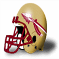The honor comes after Washington's 18 att, 269 yds, 6 TD performance against the Wisconsin State Cheesecurders. Washington was signed 2 years ago.
Washington now has 470 Rushing Yards and 6 Touchdowns for the season.
Florida State Seminoles prestige bonus + 0.05Week 4: CB Wendell Cason (OR) wins Defensive Player of the WeekCB Wendell Cason of the Oregon Ducks has earned the Defensive Player of the Week award. Cason finished with 5 Tck, 1 Int, 1 Def TD.
Oregon Ducks prestige bonus + 0.05Week 4 : Conference Players of the WeekAtlantic Coast Conference Defensive player of the week: Baker, J. - DE, WFST.
Atlantic Coast Conference Offensive player of the week: Quick, M. - WR, NCST.
Big Eight Conference Defensive player of the week: Johnson, D. - FS, OKST.
Big Eight Conference Offensive player of the week: Harris, M. - TE, KANST.
Big Ten Conference Defensive player of the week: Hendy, J. - CB, IND.
Big Ten Conference Offensive player of the week: Warfield, P. - WR, OHST.
Independent Defensive player of the week: Dumervil, E. - DE, LOU.
Independent Offensive player of the week: Washington, L. - RB, FLST.
PrimeTime International Conference Defensive player of the week: Kemp, B. - SS, KCL.
PrimeTime International Conference Offensive player of the week: Marshall, B. - WR, CU.
Pacific 8 Conference Defensive player of the week: Cason, W. - CB, OR.
Pacific 8 Conference Offensive player of the week: Simpson, O. - RB, USC.
Southeastern Conference Defensive player of the week: Ihedigbo, J. - SS, VAND.
Southeastern Conference Offensive player of the week: Morris, R. - RB, TENN.
Southwest Conference Defensive player of the week: Joseph, J. - CB, SC.
Southwest Conference Offensive player of the week: Hector, J. - RB, TEXAM.
Game Recaps for Week 4Tigers - 44, Lancers - 10
Blue Devils - 24, Huskies - 0
Terrapins - 38, Spartans - 30
Tar Heels - 13, Carabins - 12
Regents - 48, Wolfpack - 20
Thunderbirds - 33, Cavaliers - 14
Demon Deacons - 38, Mustangs - 3
Bears - 26, Buffaloes - 3
Cyclones - 36, Pirates - 10
Longhorns - 38, Jayhawks - 0
Wildcats - 34, Red Raiders - 10
Aggies - 42, Tigers - 7
Cornhuskers - 20, Razorbacks - 10
Gamecocks - 30, Sooners - 3
Cowboys - 20, Mustangs - 7
Buckeyes - 63, Golden Gophers - 6
Boilermakers - 20, Wolverines - 3
Badgers - 45, Hoosiers - 42
Blues - 34, Yellow Jackets - 0
Hurricanes - 49, Bearcats - 16
Fighting Irish - 48, Nittany Lions - 3
Eagles - 31, Orange - 10
Scarlet Knights - 37, Hokies - 14
Golden Bears - 37, Beavers - 10
Trojans - 34, Cardinal - 7
Ducks - 34, Bruins - 29
Crimson Tide - 34, Gators - 19
Commodores - 35, Bulldogs - 7
Volunteers - 24, Tigers - 17
Cardinals - 83, Tusslin Scotsmen - 0
Seminoles - 101, Cheesecurders - 0Recruiting Watch With Darren FrancisGood day football devotees, to Recruiting Watch With Darren Francis. As always, when we are this early in the season, we evaluate two of the best recruits. Moving on to his report cards, here is what we have learned:
Gerald Romo - FS:
Gerald Romo is a young FS, coming out of NEW BOSTON HS, TX. His ranking of 15 nationally, makes him a 5 star recruit. Romo is 19 years old, weighs 183 pounds and is 6' 1" tall.
Knows what it takes to achieve success at any level. This kid breeds synergy, teams play better when he is on the field. Sportsmanship, love of the sport and respect, is what you get with him. Has the speed to stay close to his man. While not elite, he has enough speed that you can do a lot of different things with him. He has been trained well, and it shows in the way he tackles. great technique.
Understandably, Gerald Romo has attracted a lot of recruiters. Local news report that the following teams have been in touch with him: Oklahoma Sooners, Ohio State Buckeyes, Auburn Tigers, Texas Longhorns.
Edward Coles - FS:
Edward Coles is FS, out of TX specifically, W T WHITE HS. Coles is a 5 star player, ranked 13. Coles is 18 years old, weighs 184 pounds and is 6' 1" tall.
Here you have a guy, who really benefits the atmosphere in the building. Everyone wants to be around him. Sufficient speed to stay on his man. Not elite, but suffient. No nonsense tackler.
The list of teams that have been in contact with Edward Coles is shorter than expected. According to people close to Coles, only Georgia Bulldogs, Oklahoma Sooners, Texas Longhorns have reached out to him.
Week 4 Recruiting Update32 players committed this week.
5 star players committed this week: 0.
4 star players committed this week: 7.
3 star players committed this week: 21.
2 star players committed this week: 4.
1 star players committed this week: 0.
1 players ranked in the top 100 recruits committed this week.
The most highly touted prospect committing this week was Cornelius Franklin (a 4 star WR from DORMAN HIGH ranked at #94) who committed to Clemson.
Atlantic Coast Conference was the conference that netted the most recruits this week with a total of 6.
USC Trojans locked down the most prospects this week was as they got 3 recruits to sign.
The highest ranked uncommitted recruit is Gary Cassidy - LB. He is ranked at #1
Total Recruits committed this season is 32.Prestige UpdatesPrestige Changes for week 4
Gains:
Louisville Cardinals vastly outscored the Georgia Tech Yellow Jackets : Prestige bonus + 0.05
Losses:
Syracuse Orange got humiliated by the LSU Tigers : Prestige loss - 0.05
Western Mustangs got trampled by the Virginia Tech Hokies : Prestige loss - 0.05
Texas Tech Red Raiders were crushed by the West Virginia Mountaineers : Prestige loss - 0.05
Arizona Wildcats was walked all over by the Kings College London Regents : Prestige loss - 0.05
Georgia Tech Yellow Jackets were blown out by the Louisville Cardinals : Prestige loss - 0.1It's all about Kuykendall.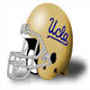A person in the Bruins' building claims the attention seeking behavior of Fulton Kuykendall - LB is getting on people's nerves. Whether it is promoting his own products and endorsements in the locker room or going on local TV bashing others for failing to put him in a position to make plays, everyone in the building is getting tired of it.
UCLA Bruins prestige penalty - 0.05Critical Recruiting Season for Illinois Fighting Illini in the Big Ten Conference. The team in the Big Ten Conference with the second most free scholarships this season is Minnesota Golden Gophers with 20. Surely they will put extra pressure on the Illinois Fighting Illini competing for their recruits. For the record, the team in the Big Ten Conference with the least scholarships to offer this season is Michigan Wolverines with 21 open slots. Week 3: RB Joseph Addai (LSU) wins Offensive Player of the WeekThe honor comes after Addai's 26 att, 246 yds, 6 TD performance against the Syracuse Orange. Addai was signed 2 years ago.
Addai now has 527 Rushing Yards and 10 Touchdowns for the season.
LSU Tigers prestige bonus + 0.05Week 3: CB Antonio Cromartie (FLST) wins Defensive Player of the WeekCB Cromartie's ball hawking ability was on display in the Wildcats 44-25 game with the Florida State Seminoles. He finished with 6 Tck, 2 Int, 1 Def TD.
"Antonio has the unique ability to make plays and generate turnovers." -Seminoles Defensive Coordinator
Florida State Seminoles prestige bonus + 0.05Week 3 : Conference Players of the WeekAtlantic Coast Conference Defensive player of the week: Henderson, J. - FS, CLEM.
Atlantic Coast Conference Offensive player of the week: Horn, J. - WR, WFST.
Big Eight Conference Defensive player of the week: Williams, A. - DE, COL.
Big Eight Conference Offensive player of the week: Owens, T. - WR, IAST.
Big Ten Conference Defensive player of the week: Halas, G. - DE, ILL.
Big Ten Conference Offensive player of the week: George, E. - RB, OHST.
Independent Defensive player of the week: Cromartie, A. - CB, FLST.
Independent Offensive player of the week: Brown, E. - WR, MIAFL.
PrimeTime International Conference Defensive player of the week: Hunter, J. - DE, UWL.
PrimeTime International Conference Offensive player of the week: Rector, J. - WR, UBC .
Pacific 8 Conference Defensive player of the week: Stover, J. - DE, OR.
Pacific 8 Conference Offensive player of the week: Jones-Drew, M. - RB, UCLA.
Southeastern Conference Defensive player of the week: Harper, R. - SS, BAMA.
Southeastern Conference Offensive player of the week: Addai, J. - RB, LSU.
Southwest Conference Defensive player of the week: Scott, W. - DE, ECU.
Southwest Conference Offensive player of the week: Williams, M. - WR, TX.
Game Recaps for Week 3Demon Deacons - 111, Cheesecurders - 0
Boilermakers - 33, Sooners - 13
Eagles - 27, Golden Gophers - 6
Wildcats - 44, Seminoles - 25
Wolverines - 23, Midshipmen - 0
Nittany Lions - 43, Lancers - 3
Panthers - 23, Cornhuskers - 10
Spartans - 21, Scarlet Knights - 14
Tar Heels - 20, Gamecocks - 0
Tigers - 68, Orange - 10
Hokies - 39, Mustangs - 0
Spartans - 17, Cowboys - 0
Thunderbirds - 48, Terrapins - 36
Hurricanes - 37, Huskies - 10
Badgers - 23, Golden Bears - 13
Ducks - 42, Tigers - 38
Cyclones - 30, Beavers - 3
Hoosiers - 45, Cardinal - 35
Bruins - 41, Wildcats - 3
Trojans - 62, Carabins - 3
Commodores - 29, Huskies - 9
Tigers - 24, Cougars - 3
Gators - 34, Hawkeyes - 13
Fighting Irish - 66, Wildcats - 21
Buffaloes - 16, Bulldogs - 13
Cavaliers - 31, Rebels - 3
Razorbacks - 24, Jayhawks - 0
Bulldogs - 30, Bears - 14
Bison - 13, Black Knights - 6
Blue Devils - 34, Mustangs - 14
Crimson Tide - 24, Longhorns - 21
Tigers - 44, Aggies - 21
Pirates - 13, Rainbow Warriors - 10
Mountaineers - 40, Red Raiders - 3
Regents - 47, Wildcats - 0
Volunteers - 24, Sun Devils - 14
Cardinals - 43, Yellow Jackets - 3
Buckeyes - 75, Bearcats - 10
Blues - 45, Cardinals - 10
Golden Flashes - 10, Wolfpack - 3
Fighting Illini - 57, Tusslin Scotsmen - 0Week 3: C C FILLER (SC) has suffered a major injury!The South Carolina Gamecocks' C C FILLER has suffered an injury: Out (8-12 weeks).Week 3: DE Neil Elshire (OR) has suffered a major injury!The Oregon Ducks' DE Neil Elshire has suffered an injury: Out (12-16 weeks).Recruiting Watch With Darren FrancisGreetings football enthusiasts, to more in detail analysis in this installment of Recruiting Watch With Darren Francis. Here we provide an in depth look at two of the best recruits. Alright, let us get down to business!
Preston Durr - DT:
Preston Durr is a talented DT, graduating from JEFFERSON DAVIS HS, AL. Durr is a 5 star player, and his overall ranking is 10. The 19 year old Durr, weighs 294 pounds and is 6' 1" tall.
Will flatten smaller offensive linemen and go toe to toe with bigger ones.
Teams are competing for the signature of the promising DT. It is going to be a hard decision to make, when the list of teams includes Preston Durr.
Dae Anderson - T:
Dae Anderson is a T, and star of the JONES COUNTY HS (GA) football program. His ranking of 8 nationally, makes Anderson a 5 star player. He is 18 years old, weighs 302 pounds and is 6' 6" tall.
The kind of leadership he shows makes coaches salivate. Good strength gives him a foundation to build on. He comes of the line with power and leverage on run plays. This is something that scouts notice. He pass blocks really well.
A lot of teams are vying for a commitment from the young T. The number of teams that have approached Dae Anderson is not insignificant. Combining multiple media reports, the list of teams that have been in contact include at least the following: Michigan Wolverines, Georgia Bulldogs, Notre Dame Fighting Irish, Oklahoma Sooners.
Prestige UpdatesPrestige Changes for week 3
Gains:
Kings College London Regents put the hammer on Minnesota Golden Gophers : Prestige bonus + 0.05
Northwestern Wildcats put the hammer on Wake Forest Demon Deacons : Prestige bonus + 0.05
Miami (FL) Hurricanes lit up the scoreboard against the Nebraska Cornhuskers : Prestige bonus + 0.05
Baylor Bears lit up the scoreboard against the North Carolina State Wolfpack : Prestige bonus + 0.05
Losses:
Minnesota Golden Gophers got humiliated by the Kings College London Regents : Prestige loss - 0.1
Wake Forest Demon Deacons were no match for the Northwestern Wildcats : Prestige loss - 0.1
Nebraska Cornhuskers were crushed by the Miami (FL) Hurricanes : Prestige loss - 0.1
North Carolina State Wolfpack were crushed by the Baylor Bears : Prestige loss - 0.1Southeastern Conference Recruiting News: Eyes on Mississippi State Bulldogs and their pile of scholarships. 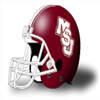The team in the Southeastern Conference with the second most free scholarships this season is LSU Tigers with 20. Surely they will put extra pressure on the Mississippi State Bulldogs competing for their recruits. For the record, the team in the Southeastern Conference with the least scholarships to offer this season is Tennessee Volunteers with 21 open slots. Week 2: CB Wendell Cason (OR) wins Defensive Player of the WeekCB Cason's ball hawking ability was on display in the Ducks 52-30 game with the Wisconsin Badgers. He finished with 11 Tck, 3 Int, 1 Def TD.
"Wendell has the unique ability to make plays and generate turnovers." -Ducks Defensive Coordinator
Oregon Ducks prestige bonus + 0.05Week 2: RB Fred Jackson (UBC ) wins Offensive Player of the WeekThe honor comes after Jackson's 20 att, 196 yds, 4 TD performance against the Wisconsin State Cheesecurders. Jackson was signed 2 years ago.
Jackson now has 225 Rushing Yards and 5 Touchdowns for the season.
British Columbia Thunderbirds prestige bonus + 0.05Week 2 : Conference Players of the WeekAtlantic Coast Conference Defensive player of the week: Sanford, L. - LB, GT.
Atlantic Coast Conference Offensive player of the week: Jones, C. - WR, DUK.
Big Eight Conference Defensive player of the week: Griffin, J. - FS, IAST.
Big Eight Conference Offensive player of the week: Wilder, J. - RB, MIZZOU.
Big Ten Conference Defensive player of the week: Ahrens, D. - LB, WIS.
Big Ten Conference Offensive player of the week: DeBerg, S. - QB, NWST.
Independent Defensive player of the week: Baker, A. - DE, ARMY.
Independent Offensive player of the week: Paige, T. - FB, VT.
PrimeTime International Conference Defensive player of the week: Willis, K. - DE, UBC .
PrimeTime International Conference Offensive player of the week: Jackson, F. - RB, UBC .
Pacific 8 Conference Defensive player of the week: Cason, W. - CB, OR.
Pacific 8 Conference Offensive player of the week: Simpson, O. - RB, USC.
Southeastern Conference Defensive player of the week: Burton, S. - DE, TENN.
Southeastern Conference Offensive player of the week: Addai, J. - RB, LSU.
Southwest Conference Defensive player of the week: Brackens, T. - DE, TX.
Southwest Conference Offensive player of the week: Williams, M. - WR, TX.
Game Recaps for Week 2Blue Devils - 49, Wildcats - 42
Scarlet Knights - 45, Terrapins - 24
Tigers - 24, Rebels - 14
Fighting Illini - 19, Spartans - 13
Hoosiers - 10, Golden Flashes - 7
Hawkeyes - 9, Jayhawks - 3
Wolverines - 20, Huskies - 12
Longhorns - 30, Spartans - 13
Regents - 86, Golden Gophers - 0
Wildcats - 63, Demon Deacons - 21
Buckeyes - 28, Cardinals - 27
Fighting Irish - 34, Boilermakers - 0
Ducks - 52, Badgers - 30
Black Knights - 51, Tusslin Scotsmen - 0
Nittany Lions - 30, Seminoles - 0
Hurricanes - 44, Cornhuskers - 3
Buffaloes - 18, Rainbow Warriors - 15
Lancers - 13, Cavaliers - 10
Tar Heels - 27, Blues - 18
Wildcats - 23, Carabins - 3
Beavers - 16, Mustangs - 6
Cyclones - 47, Golden Bears - 17
Bruins - 31, Sooners - 6
Trojans - 38, Gamecocks - 10
Crimson Tide - 27, Bison - 23
Hokies - 55, Tigers - 28
Gators - 31, Yellow Jackets - 7
Bulldogs - 21, Cougars - 14
Tigers - 41, Cowboys - 0
Volunteers - 34, Cardinals - 10
Cardinal - 28, Commodores - 26
Huskies - 27, Razorbacks - 10
Bears - 36, Wolfpack - 0
Orange - 23, Mustangs - 9
Aggies - 29, Mountaineers - 19
Eagles - 21, Pirates - 12
Bulldogs - 17, Red Raiders - 7
Midshipmen - 30, Wildcats - 6
Sun Devils - 23, Panthers - 7
Tigers - 37, Bearcats - 34
Thunderbirds - 83, Cheesecurders - 0Week 2: G Paul Howard (KCL) has suffered a major injury!The Kings College London Regents' G Paul Howard has suffered an injury: Out (12-16 weeks).Week 2: LB Al Richardson (GT) has suffered a major injury!The Georgia Tech Yellow Jackets' LB Al Richardson has suffered an injury: Out (12-16 weeks).Recruiting Watch With Darren FrancisHi fans of all things recruiting. It is time for another edition of Recruiting Watch With Darren Francis. As you may know, in these early season installments of Recruiting Watch, you get a double whammy of two of the top recruits. Here we go!
Joseph Heinz - CB:
Joseph Heinz is a blooming CB, from SAN LORENZO HIGH, CA. Heinz is a 5 star recruit, and his overall ranking is 4. Heinz is 6' 3" tall, clocks in at 196 pounds and is 19 years old.
Pretty good straight line speed. Will keep up with most receivers. A really smart kid.
The following teams are rumored to be chasing the promising CB: Boston College Eagles, Stanford Cardinal, California Golden Bears, Michigan Wolverines, USC Trojans, Oklahoma Sooners, Miami (FL) Hurricanes. Clearly, Joseph Heinz has plenty of options to mull over.
Shelby Neal - LB:
Shelby Neal is a blooming LB, from PATRICK HENRY HIGH, VA. Neal is a 5 star player, ranked 5. He is 19 years old, weighs 229 pounds and is 6' 3" tall.
You will see him make a lot of tackles. Has developed nice strength at his young age. A sack master in high school, and with this kind of quickness it is easy to see him continue that at the college level.
As one of the better LB coming out of high school this year, it is no surprise that Shelby Neal has is being courted by several programs. Local news report that at least these teams have shown interest in bringing him into their program: Missouri Tigers, Virginia Tech Hokies, Michigan Wolverines, Nebraska Cornhuskers, Oklahoma Sooners, Ohio State Buckeyes, Auburn Tigers, Miami (FL) Hurricanes.
Prestige UpdatesPrestige Changes for week 2
Gains:
Texas Longhorns blew out the Oklahoma Sooners : Prestige bonus + 0.05
Losses:
Oklahoma Sooners were no match for the Texas Longhorns : Prestige loss - 0.1
Boston College Eagles was walked all over by the Alabama Crimson Tide : Prestige loss - 0.05Critical Recruiting Season for Arizona Wildcats in the Pacific 8 Conference. 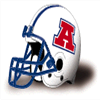Having this amount of scholarships is a blessing but also poses a risk. Given the competition in Pacific 8 Conference, the Arizona Wildcats cannot afford to draw many blanks, and the question is if they will be able to get a quality player for every open scholarship. For the record, the team in the Pacific 8 Conference with the least scholarships to offer this season is Washington Huskies with 21 open slots. Week 1: WR Mark Clayton (LOU) wins Offensive Player of the WeekClayton's 6 rec, 157 yds, 2 TD effort led the way for the Louisville Cardinals. This weeks 157 receiving yards bring his season total to 157 yards with 2 touchdowns on the season.
"To Mark, football is about winning and nothing else. He is one of the hardest workers on our team and deserves the attention he is getting from the media and fans." - Cardinals Coach
Louisville Cardinals prestige bonus + 0.05Week 1: FS Harry Hamilton (PENNST) wins Defensive Player of the WeekFS Hamilton's ball hawking ability was on display in the Nittany Lions 29-14 game with the British Columbia Thunderbirds. He finished with 5 Tck, 2 Int, 1 Def TD.
"Harry has the unique ability to make plays and generate turnovers." -Nittany Lions Defensive Coordinator
Penn State Nittany Lions prestige bonus + 0.05Week 1 : Conference Players of the WeekAtlantic Coast Conference Defensive player of the week: Jones, M. - DE, NCST.
Atlantic Coast Conference Offensive player of the week: Morse, S. - RB, VA.
Big Eight Conference Defensive player of the week: FILLER, D. - DE, KAN.
Big Eight Conference Offensive player of the week: Runnels, J. - RB, OKST.
Big Ten Conference Defensive player of the week: Hanks, M. - CB, IOWA.
Big Ten Conference Offensive player of the week: Danielson, G. - QB, PUR.
Independent Defensive player of the week: Hamilton, H. - FS, PENNST.
Independent Offensive player of the week: Clayton, M. - WR, LOU.
PrimeTime International Conference Defensive player of the week: Betters, D. - DE, US.
PrimeTime International Conference Offensive player of the week: Christensen, T. - TE, KCL.
Pacific 8 Conference Defensive player of the week: Browner, J. - SS, USC.
Pacific 8 Conference Offensive player of the week: Jones-Drew, M. - RB, UCLA.
Southeastern Conference Defensive player of the week: FILLER, D. - DE, FL.
Southeastern Conference Offensive player of the week: Nathan, T. - RB, BAMA.
Southwest Conference Defensive player of the week: Green, J. - DE, TEXAM.
Southwest Conference Offensive player of the week: Hawthorne, G. - WR, BAY.
Game Recaps for Week 1Tigers - 24, Gamecocks - 3
Blue Devils - 61, Cheesecurders - 3
Terrapins - 28, Tusslin Scotsmen - 6
Golden Flashes - 17, Tar Heels - 16
Pirates - 20, Wolfpack - 14
Cavaliers - 49, Cardinals - 17
Bearcats - 40, Demon Deacons - 32
Cardinals - 33, Buffaloes - 10
Sun Devils - 49, Cyclones - 17
Jayhawks - 14, Wildcats - 10
Bison - 30, Wildcats - 0
Red Raiders - 21, Tigers - 0
Aggies - 26, Cornhuskers - 10
Longhorns - 53, Sooners - 0
Bears - 48, Cowboys - 47
Fighting Illini - 16, Mustangs - 7
Wildcats - 41, Hoosiers - 24
Razorbacks - 31, Hawkeyes - 20
Commodores - 27, Wolverines - 10
Volunteers - 23, Spartans - 13
Golden Gophers - 17, Rebels - 3
Wildcats - 38, Bulldogs - 16
Tigers - 35, Buckeyes - 17
Boilermakers - 17, Gators - 16
Badgers - 30, Rainbow Warriors - 10
Tigers - 37, Black Knights - 3
Crimson Tide - 47, Eagles - 3
Bulldogs - 20, Yellow Jackets - 3
Hurricanes - 51, Midshipmen - 3
Fighting Irish - 20, Trojans - 7
Nittany Lions - 29, Thunderbirds - 14
Panthers - 31, Ducks - 25
Golden Bears - 37, Scarlet Knights - 13
Orange - 28, Huskies - 20
Hokies - 13, Blues - 7
Mountaineers - 27, Lancers - 20
Beavers - 36, Regents - 32
Bruins - 54, Carabins - 0
Cardinal - 24, Mustangs - 10
Huskies - 23, Spartans - 0
Seminoles - 34, Cougars - 7
|
 Clemson
Clemson Duke
Duke Georgia Tech
Georgia Tech Maryland
Maryland North Carolina
North Carolina North Carolina State
North Carolina State Virginia
Virginia Wake Forest
Wake Forest Colorado
Colorado Iowa State
Iowa State Kansas
Kansas Kansas State
Kansas State Missouri
Missouri Nebraska
Nebraska Oklahoma
Oklahoma Oklahoma State
Oklahoma State Illinois
Illinois Indiana
Indiana Iowa
Iowa Michigan
Michigan Michigan State
Michigan State Minnesota
Minnesota Northwestern
Northwestern Ohio State
Ohio State Purdue
Purdue Wisconsin
Wisconsin Army
Army Ball State
Ball State Boston College
Boston College Florida State
Florida State Hawaii
Hawaii Kent State
Kent State Lander
Lander Louisville
Louisville Miami (FL)
Miami (FL) Navy
Navy North Dakota State
North Dakota State Notre Dame
Notre Dame Penn State
Penn State Pitt
Pitt Rutgers
Rutgers St Patty Patterson
St Patty Patterson Syracuse
Syracuse Virginia Tech
Virginia Tech West Virginia
West Virginia Wisconsin State
Wisconsin State British Columbia
British Columbia Cambridge
Cambridge Kings College London
Kings College London Montreal
Montreal Oxford
Oxford Saskatchewan
Saskatchewan West London
West London Western
Western Arizona
Arizona Arizona State
Arizona State California
California Oregon
Oregon Oregon State
Oregon State Stanford
Stanford UCLA
UCLA USC
USC Washington
Washington Washington State
Washington State Alabama
Alabama Auburn
Auburn Florida
Florida Georgia
Georgia Kentucky
Kentucky LSU
LSU Mississippi
Mississippi  Mississippi State
Mississippi State Tennessee
Tennessee Vanderbilt
Vanderbilt Arkansas
Arkansas Baylor
Baylor East Carolina
East Carolina SMU
SMU South Carolina
South Carolina Texas
Texas Texas AM
Texas AM Texas Tech
Texas Tech